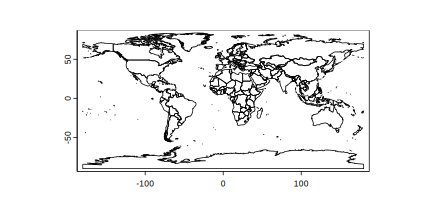
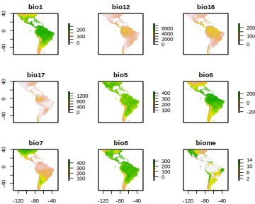
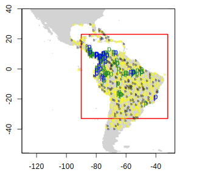

layout: true .toc.banner[ .shorttitle[ [ГИС аспирантура](break.html#home) ] ] --- name: home class: metadata customtitle middle left giphy .toc.sidebar.left-column[ .outline[ ## [Подготовка ](#H87b17) ## [Моделирование ](#Hea82e) ## [Пакет **`sdm`** ](#H2ba78) ] ] .toc.mainbar.right-column.scrollable[ .authors[ .author[Никита Платонов] .institute[с.н.с. ИПЭЭ РАН] ] .title[ Моделирование ареалов ] .subtitle[ ГИС технологии в биологических исследованиях ] .what[ Тема 10 ] .where[ ] .when[ .updated[Обновлено: 2026-02-14 10:52] ] ] --- name: H87b17 .toc.sidebar.left-column[ .outline[ ## [Подготовка ](#H87b17).fg[].bg[] ### [Некоторые определения](#H48af2) ### [Требуемые пакеты ](#H0a16b) ### [Находки ](#H70232) ### [Картооснова ](#H1e7a5) ### [Среда обитания ](#Hda1ea) ### [Подвыборки ](#H90b2c) ### [В итоге ](#Hdc071) ## [Моделирование ](#Hea82e) ## [Пакет **`sdm`** ](#H2ba78) ] ] .toc.mainbar.right-column.scrollable[ .header.h2.broad[ <span class="generation">Подготовка</span> ] .fixprecode[ Материал занятия на основе ресурса: Robert J. Hijmans and Jane Elith "[Species distribution modeling](https://rspatial.org/sdm/index.html)" <iframe src="https://rspatial.org/sdm/index.html" width="1330" height="600" data-external="1"></iframe> ] ] --- class: middle name: H48af2 .toc.sidebar.left-column[ .outline[ ## [Подготовка ](#H87b17).fg[] ### [Некоторые определения](#H48af2).fg[].bg[] ### [Требуемые пакеты ](#H0a16b).bg[] ### [Находки ](#H70232).bg[] ### [Картооснова ](#H1e7a5).bg[] ### [Среда обитания ](#Hda1ea).bg[] ### [Подвыборки ](#H90b2c).bg[] ### [В итоге ](#Hdc071).bg[] ## [Моделирование ](#Hea82e) ## [Пакет **`sdm`** ](#H2ba78) ] ] .toc.mainbar.right-column.scrollable[ .header.broad[ Некоторые определения ] .fixprecode[ https://besjournals.onlinelibrary.wiley.com/doi/full/10.1111/j.1365-2664.2006.01214.x AUC - Area Under the Receiver Operator Curve (ROC) TSS - True Skill Statistics https://cran.rstudio.com/web/packages/ENMTools/ ] ] --- name: H0a16b .toc.sidebar.left-column[ .outline[ ## [Подготовка ](#H87b17).fg[] ### [Некоторые определения](#H48af2).bg[] ### [Требуемые пакеты ](#H0a16b).fg[].bg[] ### [Находки ](#H70232).bg[] ### [Картооснова ](#H1e7a5).bg[] ### [Среда обитания ](#Hda1ea).bg[] ### [Подвыборки ](#H90b2c).bg[] ### [В итоге ](#Hdc071).bg[] ## [Моделирование ](#Hea82e) ## [Пакет **`sdm`** ](#H2ba78) ] ] .toc.mainbar.right-column.scrollable[ .header.h3.broad[ <span class="generation">Требуемые пакеты</span> .parent[.grand[Подготовка]] ] .fixprecode[ .within[ Основной **`dismo`**. Он подгружает **`sp`** для работы с векторными пространственными данными и **`raster`** для работы с растровыми пространственными данными. Данные из пакета **`geodata`** используются для картоосновы (альтернатива - данные из пакета **`tmap`**). Пакет **`MuMIn`** - для определения оптимального числа независимых переменных Пакет **`kernlab`** - для моделирования методом опорных векторов (SVM) ``` r invisible(lapply(c("dismo","geodata","MuMIn","kernlab") ,function(pkg) if (!requireNamespace(pkg)) install.packages(pkg) else 0L )) ``` ``` Loading required namespace: dismo ``` ``` Loading required namespace: geodata ``` ``` Loading required namespace: MuMIn ``` ``` Loading required namespace: kernlab ``` ``` r require(dismo) ``` ``` Loading required package: dismo ``` ``` Loading required package: raster ``` ``` Loading required package: sp ``` ] ] ] --- name: H70232 .toc.sidebar.left-column[ .outline[ ## [Подготовка ](#H87b17).fg[] ### [Некоторые определения](#H48af2).bg[] ### [Требуемые пакеты ](#H0a16b).bg[] ### [Находки ](#H70232).fg[].bg[] ### [Картооснова ](#H1e7a5).bg[] ### [Среда обитания ](#Hda1ea).bg[] ### [Подвыборки ](#H90b2c).bg[] ### [В итоге ](#Hdc071).bg[] ## [Моделирование ](#Hea82e) ## [Пакет **`sdm`** ](#H2ba78) ] ] .toc.mainbar.right-column.scrollable[ .header.h3.broad[ <span class="generation">Находки</span> .parent[.grand[Подготовка]] ] .fixprecode[ Данные по бурогорлому ленивцу [<svg aria-hidden="true" role="img" viewBox="0 0 640 512" style="height:1em;width:1.25em;vertical-align:-0.125em;margin-left:auto;margin-right:auto;font-size:inherit;fill:currentColor;overflow:visible;position:relative;"><path d="M640 51.2l-.3 12.2c-28.1.8-45 15.8-55.8 40.3-25 57.8-103.3 240-155.3 358.6H415l-81.9-193.1c-32.5 63.6-68.3 130-99.2 193.1-.3.3-15 0-15-.3C172 352.3 122.8 243.4 75.8 133.4 64.4 106.7 26.4 63.4.2 63.7c0-3.1-.3-10-.3-14.2h161.9v13.9c-19.2 1.1-52.8 13.3-43.3 34.2 21.9 49.7 103.6 240.3 125.6 288.6 15-29.7 57.8-109.2 75.3-142.8-13.9-28.3-58.6-133.9-72.8-160-9.7-17.8-36.1-19.4-55.8-19.7V49.8l142.5.3v13.1c-19.4.6-38.1 7.8-29.4 26.1 18.9 40 30.6 68.1 48.1 104.7 5.6-10.8 34.7-69.4 48.1-100.8 8.9-20.6-3.9-28.6-38.6-29.4.3-3.6 0-10.3.3-13.6 44.4-.3 111.1-.3 123.1-.6v13.6c-22.5.8-45.8 12.8-58.1 31.7l-59.2 122.8c6.4 16.1 63.3 142.8 69.2 156.7L559.2 91.8c-8.6-23.1-36.4-28.1-47.2-28.3V49.6l127.8 1.1.2.5z"/></svg>](https://ru.wikipedia.org/wiki/Бурогорлый_ленивец) ``` r bradypus <- read.table(file.path(system.file(package="dismo"),"ex/bradypus.csv") ,header=TRUE,sep=',') str(bradypus) ``` ``` 'data.frame': 116 obs. of 3 variables: $ species: chr "Bradypus variegatus" "Bradypus variegatus" "Bradypus variegatus" "Bradypus variegatus" ... $ lon : num -65.4 -65.4 -65.1 -63.7 -63.9 ... $ lat : num -10.4 -10.4 -16.8 -17.4 -17.4 ... ``` .pull-left-60[ ``` r head(bradypus) ``` ``` species lon lat 1 Bradypus variegatus -65.4000 -10.3833 2 Bradypus variegatus -65.3833 -10.3833 3 Bradypus variegatus -65.1333 -16.8000 4 Bradypus variegatus -63.6667 -17.4500 5 Bradypus variegatus -63.8500 -17.4000 6 Bradypus variegatus -64.4167 -16.0000 ``` ] .pull-right-40[ <img src="assets/lesson10//ursa01_bradypus.png" alt="" width="1330" height="300" bound style="display: block; margin: auto auto auto 0;" /> ] ] ] --- name: H1e7a5 .toc.sidebar.left-column[ .outline[ ## [Подготовка ](#H87b17).fg[] ### [Некоторые определения](#H48af2).bg[] ### [Требуемые пакеты ](#H0a16b).bg[] ### [Находки ](#H70232).bg[] ### [Картооснова ](#H1e7a5).fg[].bg[] ### [Среда обитания ](#Hda1ea).bg[] ### [Подвыборки ](#H90b2c).bg[] ### [В итоге ](#Hdc071).bg[] ## [Моделирование ](#Hea82e) ## [Пакет **`sdm`** ](#H2ba78) ] ] .toc.mainbar.right-column.scrollable[ .header.h3.broad[ <span class="generation">Картооснова</span> .parent[.grand[Подготовка]] ] .fixprecode[ Использование векторной карты границ государств в качестве картографической основы ``` r # data(World,package="tmap") # World <- sf::st_geometry(World) World <- geodata::world(path=tempdir()) ``` ``` r op <- par(mar=rep(0,4)) plot(World) ```  ``` r par(op) ``` ] ] --- name: Hda1ea .toc.sidebar.left-column[ .outline[ ## [Подготовка ](#H87b17).fg[] ### [Некоторые определения](#H48af2).bg[] ### [Требуемые пакеты ](#H0a16b).bg[] ### [Находки ](#H70232).bg[] ### [Картооснова ](#H1e7a5).bg[] ### [Среда обитания ](#Hda1ea) <span class="bullet bullet-active">[•](#Hda1ea)</span><span class="bullet mslide14m">[•](#Hceeeb)</span><span class="bullet mslide15m">[•](#Hb9e98)</span><span class="bullet mslide17m">[•](#H57e7e)</span>.fg[].bg[] ### [Подвыборки ](#H90b2c).bg[] ### [В итоге ](#Hdc071).bg[] ## [Моделирование ](#Hea82e) ## [Пакет **`sdm`** ](#H2ba78) ] ] .toc.mainbar.right-column.scrollable[ .header.h3.broad[ <span class="generation">Среда обитания</span> .parent[.grand[Подготовка]] ] .fixprecode[ ``` r (predictnames <- dir(file.path(system.file(package="dismo"),'ex') ,pattern='grd$',full.names=TRUE)) ``` ``` [1] "C:/Software/Rlibs4/dismo/ex/bio1.grd" [2] "C:/Software/Rlibs4/dismo/ex/bio12.grd" [3] "C:/Software/Rlibs4/dismo/ex/bio16.grd" [4] "C:/Software/Rlibs4/dismo/ex/bio17.grd" [5] "C:/Software/Rlibs4/dismo/ex/bio5.grd" [6] "C:/Software/Rlibs4/dismo/ex/bio6.grd" [7] "C:/Software/Rlibs4/dismo/ex/bio7.grd" [8] "C:/Software/Rlibs4/dismo/ex/bio8.grd" [9] "C:/Software/Rlibs4/dismo/ex/biome.grd" ``` ``` r (predictors <- stack(predictnames) |> brick()) ``` ``` class : RasterBrick dimensions : 192, 186, 35712, 9 (nrow, ncol, ncell, nlayers) resolution : 0.5, 0.5 (x, y) extent : -125, -32, -56, 40 (xmin, xmax, ymin, ymax) crs : +proj=longlat +ellps=WGS84 +towgs84=0,0,0,0,0,0,0 +no_defs source : memory names : bio1, bio12, bio16, bio17, bio5, bio6, bio7, bio8, biome min values : -23, 0, 0, 0, 61, -212, 60, -66, 1 max values : 289, 7682, 2458, 1496, 422, 242, 461, 323, 14 ``` ``` r (levels <- sort(unique(na.omit(predictors[["biome"]][])))) ``` ``` [1] 1 2 3 4 5 7 8 9 10 11 12 13 14 ``` ] ] --- name: Hceeeb .toc.sidebar.left-column[ .outline[ ## [Подготовка ](#H87b17).fg[] ### [Некоторые определения](#H48af2).bg[] ### [Требуемые пакеты ](#H0a16b).bg[] ### [Находки ](#H70232).bg[] ### [Картооснова ](#H1e7a5).bg[] ### [Среда обитания ](#Hda1ea) <span class="bullet bullet">[•](#Hda1ea)</span><span class="bullet bullet-active">[•](#Hceeeb)</span><span class="bullet mslide15m">[•](#Hb9e98)</span><span class="bullet mslide17m">[•](#H57e7e)</span>.fg[].bg[] ### [Подвыборки ](#H90b2c).bg[] ### [В итоге ](#Hdc071).bg[] ## [Моделирование ](#Hea82e) ## [Пакет **`sdm`** ](#H2ba78) ] ] .toc.mainbar.right-column.scrollable[ .header.h3.broad[ <span class="generation">Среда обитания</span> .parent[.grand[Подготовка]] ] .fixprecode[ ``` r plot(predictors) ```  ] ] --- name: Hb9e98 .toc.sidebar.left-column[ .outline[ ## [Подготовка ](#H87b17).fg[] ### [Некоторые определения](#H48af2).bg[] ### [Требуемые пакеты ](#H0a16b).bg[] ### [Находки ](#H70232).bg[] ### [Картооснова ](#H1e7a5).bg[] ### [Среда обитания ](#Hda1ea) <span class="bullet bullet">[•](#Hda1ea)</span><span class="bullet bullet">[•](#Hceeeb)</span><span class="bullet bullet-active">[•](#Hb9e98)</span><span class="bullet mslide17m">[•](#H57e7e)</span>.fg[].bg[] ### [Подвыборки ](#H90b2c).bg[] ### [В итоге ](#Hdc071).bg[] ## [Моделирование ](#Hea82e) ## [Пакет **`sdm`** ](#H2ba78) ] ] .toc.mainbar.right-column.scrollable[ .header.h3.broad[ <span class="generation">Среда обитания</span> .parent[.grand[Подготовка]] ] .fixprecode[ Биоклиматические переменные WorldClim ([полный список](https://www.worldclim.org/data/bioclim.html)) || -|- BIO1 | Annual Mean Temperature BIO5 | Max Temperature of Warmest Month BIO6 | Min Temperature of Coldest Month BIO7 | Temperature Annual Range (BIO5-BIO6) BIO8 | Mean Temperature of Wettest Quarter BIO12 | Annual Precipitation BIO16 | Precipitation of Wettest Quarter BIO17 | Precipitation of Driest Quarter Данные можно получить с помощью функции `worldclim_global()` из пакета **`geodata`**, например: ``` r # raster::getData('worldclim',var='bio',res=10) ## до версии 3.6-26 geodata::worldclim_global(var="bio",res=10,path=tempdir()) ``` Наземные биомы (данные [отсюда](https://www.worldwildlife.org/pages/conservation-science-data-and-tools)) || -|- BIOME | Terrestrial biome ] ] --- name: H57e7e .toc.sidebar.left-column[ .outline[ ## [Подготовка ](#H87b17).fg[] ### [Некоторые определения](#H48af2).bg[] ### [Требуемые пакеты ](#H0a16b).bg[] ### [Находки ](#H70232).bg[] ### [Картооснова ](#H1e7a5).bg[] ### [Среда обитания ](#Hda1ea) <span class="bullet bullet">[•](#Hda1ea)</span><span class="bullet bullet">[•](#Hceeeb)</span><span class="bullet bullet">[•](#Hb9e98)</span><span class="bullet bullet-active">[•](#H57e7e)</span>.fg[].bg[] ### [Подвыборки ](#H90b2c).bg[] ### [В итоге ](#Hdc071).bg[] ## [Моделирование ](#Hea82e) ## [Пакет **`sdm`** ](#H2ba78) ] ] .toc.mainbar.right-column.scrollable[ .header.h3.broad[ <span class="generation">Среда обитания</span> .parent[.grand[Подготовка]] ] .fixprecode[ В растре `biome` записаны номинальные характеристики: || -|- 1 | Tropical & Subtropical Moist Broadleaf Forests 2 | Tropical & Subtropical Dry Broadleaf Forests 3 | Tropical & Subtropical Coniferous Forests 4 | Temperate Broadleaf & Mixed Forests 5 | Temperate Conifer Forests 6 | Boreal Forests/Taiga 7 | Tropical & Subtropical Grasslands, Savannas & Shrublands 8 | Temperate Grasslands, Savannas & Shrublands 9 | Flooded Grasslands & Savannas 10| Montane Grasslands & Shrublands 11| Tundra 12| Mediterranean Forests, Woodlands & Scrub 13| Deserts & Xeric Shrublands 14| Mangroves ] ] --- name: H90b2c .toc.sidebar.left-column[ .outline[ ## [Подготовка ](#H87b17).fg[] ### [Некоторые определения](#H48af2).bg[] ### [Требуемые пакеты ](#H0a16b).bg[] ### [Находки ](#H70232).bg[] ### [Картооснова ](#H1e7a5).bg[] ### [Среда обитания ](#Hda1ea).bg[] ### [Подвыборки ](#H90b2c).fg[].bg[] #### [Присутствие ](#Hd9751) #### [Псевдоотсутствие ](#H61934) #### [Обучение и тестирование ](#Hb83bf) ### [В итоге ](#Hdc071) ## [Моделирование ](#Hea82e) ## [Пакет **`sdm`** ](#H2ba78) ] ] .toc.mainbar.right-column.scrollable[ .header.h3.broad[ <span class="generation">Подвыборки</span> .parent[.grand[Подготовка]] ] .fixprecode[ Используемый параметр для генератора псевдослучайных чисел. Зафиксированное значение обеспечивает воспроизводимость вычислений. ``` r (seed <- sample(100:999,1)) ``` ``` [1] 191 ``` ``` r set.seed(seed) ``` Число `1/k` характеризует долю тестовых данных. Разбиваем данные на `k` групп, одна из которых будет тестовая. ``` r k <- 5L ``` Выбор номера тестовой группы: ``` r (g <- sample(seq(k),1)) ``` ``` [1] 2 ``` ] ] --- name: Hd9751 .toc.sidebar.left-column[ .outline[ ## [Подготовка ](#H87b17).fg[] ### [Некоторые определения](#H48af2) ### [Требуемые пакеты ](#H0a16b) ### [Находки ](#H70232) ### [Картооснова ](#H1e7a5) ### [Среда обитания ](#Hda1ea) ### [Подвыборки ](#H90b2c).fg[] #### [Присутствие ](#Hd9751).fg[].bg[] #### [Псевдоотсутствие ](#H61934).bg[] #### [Обучение и тестирование ](#Hb83bf).bg[] ### [В итоге ](#Hdc071) ## [Моделирование ](#Hea82e) ## [Пакет **`sdm`** ](#H2ba78) ] ] .toc.mainbar.right-column.scrollable[ .header.h4.broad[ <span class="generation">Присутствие</span> .parent[.grand[Подвыборки .grand[Подготовка]]] ] .fixprecode[ ``` r group <- dismo::kfold(bradypus,k) ## group <- sample(seq(k),nrow(bradypus),replace=TRUE) ## альтернативное группирование str(group) ``` ``` int [1:116] 4 3 1 3 1 5 1 4 3 3 ... ``` ``` r table(group) ``` ``` group 1 2 3 4 5 23 23 24 23 23 ``` Формирование точек присутствия и разбиение их на группы для обучения и тестирования ``` r pres <- bradypus[,-1] ## presence pres_train <- pres[group!=g,] pres_test <- pres[group==g,] nrow(pres_train) ``` ``` [1] 93 ``` ``` r nrow(pres_test) ``` ``` [1] 23 ``` ] ] --- name: H61934 .toc.sidebar.left-column[ .outline[ ## [Подготовка ](#H87b17).fg[] ### [Некоторые определения](#H48af2) ### [Требуемые пакеты ](#H0a16b) ### [Находки ](#H70232) ### [Картооснова ](#H1e7a5) ### [Среда обитания ](#Hda1ea) ### [Подвыборки ](#H90b2c).fg[] #### [Присутствие ](#Hd9751).bg[] #### [Псевдоотсутствие ](#H61934) <span class="bullet bullet-active">[•](#H61934)</span><span class="bullet mslide21m">[•](#H95a91)</span>.fg[].bg[] #### [Обучение и тестирование ](#Hb83bf).bg[] ### [В итоге ](#Hdc071) ## [Моделирование ](#Hea82e) ## [Пакет **`sdm`** ](#H2ba78) ] ] .toc.mainbar.right-column.scrollable[ .header.h4.broad[ <span class="generation">Псевдоотсутствие</span> .parent[.grand[Подвыборки .grand[Подготовка]]] ] .fixprecode[ Используемый пространственный охват .notpull-left[ ``` r ## terra::ext(-90,-32,-33,23) ## not for `dismo::randomPoints()` ext <- raster::extent(-90,-32,-33,23) ## for `dismo::randomPoints()` opP <- par(mar=c(3,3,1,1)) plot(ext,col="brown") plot(World,col="#FFFFA080",border="orange",add=TRUE) ``` ``` r par(opP) ``` ] .notpull-right[ <img src="assets/lesson10/ext-code-1.svg" alt="" width="1330" height="450" style="display: block; margin: auto auto auto 0;" /> ] ] ] --- name: H95a91 .toc.sidebar.left-column[ .outline[ ## [Подготовка ](#H87b17).fg[] ### [Некоторые определения](#H48af2) ### [Требуемые пакеты ](#H0a16b) ### [Находки ](#H70232) ### [Картооснова ](#H1e7a5) ### [Среда обитания ](#Hda1ea) ### [Подвыборки ](#H90b2c).fg[] #### [Присутствие ](#Hd9751).bg[] #### [Псевдоотсутствие ](#H61934) <span class="bullet bullet">[•](#H61934)</span><span class="bullet bullet-active">[•](#H95a91)</span>.fg[].bg[] #### [Обучение и тестирование ](#Hb83bf).bg[] ### [В итоге ](#Hdc071) ## [Моделирование ](#Hea82e) ## [Пакет **`sdm`** ](#H2ba78) ] ] .toc.mainbar.right-column.scrollable[ .header.h4.broad[ <span class="generation">Псевдоотсутствие</span> .parent[.grand[Подвыборки .grand[Подготовка]]] ] .fixprecode[ Формирование набора точек псевдоотсутствия ``` r backg <- randomPoints(predictors, n=1000, ext=ext, extf = 1.25) colnames(backg) = c('lon', 'lat') head(backg) ``` ``` lon lat [1,] -45.75 -21.75 [2,] -68.25 -6.25 [3,] -69.25 -29.75 [4,] -45.75 -7.75 [5,] -66.75 -11.75 [6,] -56.75 -15.75 ``` Присвоения номеров групп для отбора в тестовую группу ``` r group <- kfold(backg,k) table(group) ``` ``` group 1 2 3 4 5 200 200 200 200 200 ``` ] ] --- name: Hb83bf .toc.sidebar.left-column[ .outline[ ## [Подготовка ](#H87b17).fg[] ### [Некоторые определения](#H48af2) ### [Требуемые пакеты ](#H0a16b) ### [Находки ](#H70232) ### [Картооснова ](#H1e7a5) ### [Среда обитания ](#Hda1ea) ### [Подвыборки ](#H90b2c).fg[] #### [Присутствие ](#Hd9751).bg[] #### [Псевдоотсутствие ](#H61934).bg[] #### [Обучение и тестирование ](#Hb83bf) <span class="bullet bullet-active">[•](#Hb83bf)</span><span class="bullet mslide23m">[•](#H7ba77)</span><span class="bullet mslide24m">[•](#He5c3e)</span><span class="bullet mslide25m">[•](#H92c4d)</span>.fg[].bg[] ### [В итоге ](#Hdc071) ## [Моделирование ](#Hea82e) ## [Пакет **`sdm`** ](#H2ba78) ] ] .toc.mainbar.right-column.scrollable[ .header.h4.broad[ <span class="generation">Обучение и тестирование</span> .parent[.grand[Подвыборки .grand[Подготовка]]] ] .fixprecode[ Формирование группы для обучения и группы для тестирования для точек псевдоотсутствия ``` r backg_train <- backg[group!=g,] backg_test <- backg[group==g,] ``` Формирование группы для обучения из точек присутствия и точек псевдоотсутствия ``` r train <- rbind(pres_train, backg_train) ``` Формирование группы для тестирования из точек присутствия и точек псевдоотсутствия ``` r test <- rbind(pres_test, backg_test) ``` Вектор присутствия (значение 1) и отсутствия (значения 0) для обучающей выборки ``` r pb_train <- c(rep(1L, nrow(pres_train)), rep(0L, nrow(backg_train))) ``` Вектор присутствия (значение 1) и отсутствия (значения 0) для тестовой выборки ``` r pb_test <- c(rep(1L, nrow(pres_test)), rep(0L, nrow(backg_test))) ``` ] ] --- name: H7ba77 .toc.sidebar.left-column[ .outline[ ## [Подготовка ](#H87b17).fg[] ### [Некоторые определения](#H48af2) ### [Требуемые пакеты ](#H0a16b) ### [Находки ](#H70232) ### [Картооснова ](#H1e7a5) ### [Среда обитания ](#Hda1ea) ### [Подвыборки ](#H90b2c).fg[] #### [Присутствие ](#Hd9751).bg[] #### [Псевдоотсутствие ](#H61934).bg[] #### [Обучение и тестирование ](#Hb83bf) <span class="bullet bullet">[•](#Hb83bf)</span><span class="bullet bullet-active">[•](#H7ba77)</span><span class="bullet mslide24m">[•](#He5c3e)</span><span class="bullet mslide25m">[•](#H92c4d)</span>.fg[].bg[] ### [В итоге ](#Hdc071) ## [Моделирование ](#Hea82e) ## [Пакет **`sdm`** ](#H2ba78) ] ] .toc.mainbar.right-column.scrollable[ .header.h4.broad[ <span class="generation">Обучение и тестирование</span> .parent[.grand[Подвыборки .grand[Подготовка]]] ] .fixprecode[ Получение характеристик из растров для точек обучающей выборки ``` r envtrain <- extract(predictors, train) |> data.frame() ``` Новый столбец присутствия/отсутствия ``` r envtrain <- cbind(pa=pb_train,envtrain) ``` Зададим биом категорией (фактором) ``` r envtrain$biome = factor(envtrain$biome,levels=levels) str(envtrain) ``` ``` 'data.frame': 893 obs. of 10 variables: $ pa : int 1 1 1 1 1 1 1 1 1 1 ... $ bio1 : int 263 263 253 243 243 252 240 275 271 274 ... $ bio12: int 1639 1639 3624 1693 1693 2501 1214 2259 2212 2233 ... $ bio16: int 724 724 1547 775 775 1081 516 956 807 877 ... $ bio17: int 62 62 373 186 186 280 146 208 281 230 ... $ bio5 : int 338 338 329 318 318 326 317 335 327 329 ... $ bio6 : int 191 191 150 150 150 154 150 231 220 227 ... $ bio7 : int 147 147 179 168 168 172 168 104 107 102 ... $ bio8 : int 261 261 271 264 264 270 261 270 266 269 ... $ biome: Factor w/ 13 levels "1","2","3","4",..: 1 1 1 1 1 1 2 1 1 1 ... ``` ] ] --- name: He5c3e .toc.sidebar.left-column[ .outline[ ## [Подготовка ](#H87b17).fg[] ### [Некоторые определения](#H48af2) ### [Требуемые пакеты ](#H0a16b) ### [Находки ](#H70232) ### [Картооснова ](#H1e7a5) ### [Среда обитания ](#Hda1ea) ### [Подвыборки ](#H90b2c).fg[] #### [Присутствие ](#Hd9751).bg[] #### [Псевдоотсутствие ](#H61934).bg[] #### [Обучение и тестирование ](#Hb83bf) <span class="bullet bullet">[•](#Hb83bf)</span><span class="bullet bullet">[•](#H7ba77)</span><span class="bullet bullet-active">[•](#He5c3e)</span><span class="bullet mslide25m">[•](#H92c4d)</span>.fg[].bg[] ### [В итоге ](#Hdc071) ## [Моделирование ](#Hea82e) ## [Пакет **`sdm`** ](#H2ba78) ] ] .toc.mainbar.right-column.scrollable[ .header.h4.broad[ <span class="generation">Обучение и тестирование</span> .parent[.grand[Подвыборки .grand[Подготовка]]] ] .fixprecode[ ``` r head(envtrain,24) ``` ``` pa bio1 bio12 bio16 bio17 bio5 bio6 bio7 bio8 biome 1 1 263 1639 724 62 338 191 147 261 1 2 1 263 1639 724 62 338 191 147 261 1 3 1 253 3624 1547 373 329 150 179 271 1 4 1 243 1693 775 186 318 150 168 264 1 5 1 243 1693 775 186 318 150 168 264 1 6 1 252 2501 1081 280 326 154 172 270 1 7 1 240 1214 516 146 317 150 168 261 2 8 1 275 2259 956 208 335 231 104 270 1 9 1 271 2212 807 281 327 220 107 266 1 10 1 274 2233 877 230 329 227 102 269 1 11 1 266 2592 872 498 320 214 105 262 1 12 1 274 2233 877 230 329 227 102 269 1 13 1 266 2608 957 306 322 219 103 262 1 14 1 239 1194 540 130 313 165 148 252 1 15 1 271 2599 1250 136 325 224 101 267 1 16 1 269 2211 981 196 333 219 114 263 1 17 1 270 2274 1008 191 331 221 110 266 1 18 1 263 1842 818 176 326 204 121 257 1 19 1 260 1945 880 143 324 204 120 256 1 20 1 263 1878 893 122 324 212 112 259 1 21 1 263 1878 893 122 324 212 112 259 1 22 1 260 1882 845 170 324 203 121 255 1 23 1 270 2479 1277 154 331 214 117 267 1 24 1 270 2487 1221 182 329 216 113 268 1 ``` ] ] --- name: H92c4d .toc.sidebar.left-column[ .outline[ ## [Подготовка ](#H87b17).fg[] ### [Некоторые определения](#H48af2) ### [Требуемые пакеты ](#H0a16b) ### [Находки ](#H70232) ### [Картооснова ](#H1e7a5) ### [Среда обитания ](#Hda1ea) ### [Подвыборки ](#H90b2c).fg[] #### [Присутствие ](#Hd9751).bg[] #### [Псевдоотсутствие ](#H61934).bg[] #### [Обучение и тестирование ](#Hb83bf) <span class="bullet bullet">[•](#Hb83bf)</span><span class="bullet bullet">[•](#H7ba77)</span><span class="bullet bullet">[•](#He5c3e)</span><span class="bullet bullet-active">[•](#H92c4d)</span>.fg[].bg[] ### [В итоге ](#Hdc071) ## [Моделирование ](#Hea82e) ## [Пакет **`sdm`** ](#H2ba78) ] ] .toc.mainbar.right-column.scrollable[ .header.h4.broad[ <span class="generation">Обучение и тестирование</span> .parent[.grand[Подвыборки .grand[Подготовка]]] ] .fixprecode[ Получение характеристик из растров для точек тестовой выборки ``` r envtest <- extract(predictors, test) |> data.frame() envtest <- cbind(pa=pb_test,envtest) envtest$biome = factor(envtest$biome, levels=levels) str(envtest) ``` ``` 'data.frame': 223 obs. of 10 variables: $ pa : int 1 1 1 1 1 1 1 1 1 1 ... $ bio1 : int 251 254 260 232 244 254 264 242 272 261 ... $ bio12: int 1617 2084 1882 3921 1526 1499 7682 2233 1227 7024 ... $ bio16: int 808 1011 845 1364 631 606 2426 793 503 2458 ... $ bio17: int 97 137 170 365 75 90 1496 176 64 937 ... $ bio5 : int 312 317 324 290 313 325 312 290 340 305 ... $ bio6 : int 194 197 203 171 174 185 218 198 207 221 ... $ bio7 : int 118 119 121 119 139 140 94 93 133 83 ... $ bio8 : int 246 251 255 229 240 251 263 242 268 257 ... $ biome: Factor w/ 13 levels "1","2","3","4",..: 1 1 1 1 2 12 1 1 1 1 ... ``` Отдельно пригодятся точки присутствия и псевдоотсутствия тестовой выборки ``` r testpres <- envtest[envtest$pa==1,-1] testbackg <- envtest[envtest$pa==0,-1] ``` ] ] --- name: Hdc071 .toc.sidebar.left-column[ .outline[ ## [Подготовка ](#H87b17).fg[] ### [Некоторые определения](#H48af2).bg[] ### [Требуемые пакеты ](#H0a16b).bg[] ### [Находки ](#H70232).bg[] ### [Картооснова ](#H1e7a5).bg[] ### [Среда обитания ](#Hda1ea).bg[] ### [Подвыборки ](#H90b2c).bg[] ### [В итоге ](#Hdc071) <span class="bullet bullet-active">[•](#Hdc071)</span><span class="bullet mslide28m">[•](#Hec75a)</span>.fg[].bg[] ## [Моделирование ](#Hea82e) ## [Пакет **`sdm`** ](#H2ba78) ] ] .toc.mainbar.right-column.scrollable[ .header.h3.broad[ <span class="generation">В итоге</span> .parent[.grand[Подготовка]] ] .fixprecode[ Обзор размеров выборок ``` r data.frame(pres_train=nrow(pres_train),pres_test=nrow(pres_test),pres=nrow(pres) ,backg_train=nrow(backg_train),backg_test=nrow(backg_test) ,train=nrow(train),envtrain=nrow(envtrain) ,test=nrow(test),envtest=nrow(envtest) ,row.names="size") |> t() |> knitr::kable() ``` | | size| |:-----------|----:| |pres_train | 93| |pres_test | 23| |pres | 116| |backg_train | 800| |backg_test | 200| |train | 893| |envtrain | 893| |test | 223| |envtest | 223| ] ] --- name: Hec75a .toc.sidebar.left-column[ .outline[ ## [Подготовка ](#H87b17).fg[] ### [Некоторые определения](#H48af2).bg[] ### [Требуемые пакеты ](#H0a16b).bg[] ### [Находки ](#H70232).bg[] ### [Картооснова ](#H1e7a5).bg[] ### [Среда обитания ](#Hda1ea).bg[] ### [Подвыборки ](#H90b2c).bg[] ### [В итоге ](#Hdc071) <span class="bullet bullet">[•](#Hdc071)</span><span class="bullet bullet-active">[•](#Hec75a)</span>.fg[].bg[] ## [Моделирование ](#Hea82e) ## [Пакет **`sdm`** ](#H2ba78) ] ] .toc.mainbar.right-column.scrollable[ .header.h3.broad[ <span class="generation">В итоге</span> .parent[.grand[Подготовка]] ] .fixprecode[ .notpull-left[ ``` r opP <- par(mar=c(2.5,2.5,1,1)) plot(!is.na(predictors[[1]]), col=c('white', 'light grey'), legend=FALSE) plot(ext, add=TRUE, col='red', lwd=2) points(backg_train, pch='b', cex=0.5, col='yellow') points(backg_test, pch='b', cex=0.5, col='black') points(pres_train, pch= 'p', col='forestgreen') points(pres_test, pch='p', col='blue') ``` ``` r par(opP) ``` ] .notpull-right[  ] ] ] --- name: Hea82e .toc.sidebar.left-column[ .outline[ ## [Подготовка ](#H87b17) ## [Моделирование ](#Hea82e).fg[] ### [GML ](#Hea82e).fg[] #### [Binomilal/logit ](#Hea82e) <span class="bullet bullet-active">[•](#Hea82e)</span><span class="bullet mslide32m">[•](#H15bb7)</span><span class="bullet mslide33m">[•](#H62bc4)</span><span class="bullet mslide34m">[•](#Hfcd8d)</span><span class="bullet mslide35m">[•](#H8bdfe)</span>.fg[].bg[] #### [Gaussian/identity ](#H5a602).bg[] ### [Bioclim ](#H6ab65) ### [Domain ](#Hb2032) ### [Mahalanobis ](#H594f1) ### [MaxEnt ](#H2aa98) ### [Random Forests ](#H4f074) ### [SVM ](#H5c46c) ## [Пакет **`sdm`** ](#H2ba78) ] ] .toc.mainbar.right-column.scrollable[ .header.h4.broad[ <span class="generation">Binomilal/logit</span> .parent[.grand[GML .grand[Моделирование]]] ] .fixprecode[ .font90[ ``` r gm1 <- glm(pa ~ bio1 + bio5 + bio6 + bio7 + bio8 + bio12 + bio16 + bio17, family = binomial(link = "logit"), data=envtrain, na.action=na.pass) summary(gm1) ``` ``` Call: glm(formula = pa ~ bio1 + bio5 + bio6 + bio7 + bio8 + bio12 + bio16 + bio17, family = binomial(link = "logit"), data = envtrain, na.action = na.pass) Coefficients: Estimate Std. Error z value Pr(>|z|) (Intercept) 3.8554933 1.5750877 2.448 0.0144 * bio1 0.0135495 0.0480504 0.282 0.7780 bio5 0.0727483 0.2660707 0.273 0.7845 bio6 -0.1170342 0.2678867 -0.437 0.6622 bio7 -0.1394130 0.2664589 -0.523 0.6008 bio8 0.0251749 0.0219180 1.149 0.2507 bio12 0.0008621 0.0006467 1.333 0.1825 bio16 0.0002754 0.0013820 0.199 0.8421 bio17 -0.0033366 0.0015055 -2.216 0.0267 * --- Signif. codes: 0 '***' 0.001 '**' 0.01 '*' 0.05 '.' 0.1 ' ' 1 (Dispersion parameter for binomial family taken to be 1) Null deviance: 596.69 on 892 degrees of freedom Residual deviance: 461.67 on 884 degrees of freedom AIC: 479.67 Number of Fisher Scoring iterations: 7 ``` ] ] ] --- name: H15bb7 .toc.sidebar.left-column[ .outline[ ## [Подготовка ](#H87b17) ## [Моделирование ](#Hea82e).fg[] ### [GML ](#Hea82e).fg[] #### [Binomilal/logit ](#Hea82e) <span class="bullet bullet">[•](#Hea82e)</span><span class="bullet bullet-active">[•](#H15bb7)</span><span class="bullet mslide33m">[•](#H62bc4)</span><span class="bullet mslide34m">[•](#Hfcd8d)</span><span class="bullet mslide35m">[•](#H8bdfe)</span>.fg[].bg[] #### [Gaussian/identity ](#H5a602).bg[] ### [Bioclim ](#H6ab65) ### [Domain ](#Hb2032) ### [Mahalanobis ](#H594f1) ### [MaxEnt ](#H2aa98) ### [Random Forests ](#H4f074) ### [SVM ](#H5c46c) ## [Пакет **`sdm`** ](#H2ba78) ] ] .toc.mainbar.right-column.scrollable[ .header.h4.broad[ <span class="generation">Binomilal/logit</span> .parent[.grand[GML .grand[Моделирование]]] ] .fixprecode[ .font95[ ``` r res <- MuMIn::get.models(MuMIn::dredge(gm1),subset=seq(2)) ``` ``` Fixed term is "(Intercept)" ``` ``` r gm1 <- res[[1]] summary(gm1) ``` ``` Call: glm(formula = pa ~ bio12 + bio17 + bio6 + bio7 + bio8 + 1, family = binomial(link = "logit"), data = envtrain, na.action = na.pass) Coefficients: Estimate Std. Error z value Pr(>|z|) (Intercept) 3.8224300 1.5661777 2.441 0.014662 * bio12 0.0009841 0.0002253 4.368 1.25e-05 *** bio17 -0.0035524 0.0010151 -3.499 0.000466 *** bio6 -0.0350969 0.0151313 -2.319 0.020369 * bio7 -0.0618539 0.0127960 -4.834 1.34e-06 *** bio8 0.0296232 0.0156254 1.896 0.057982 . --- Signif. codes: 0 '***' 0.001 '**' 0.01 '*' 0.05 '.' 0.1 ' ' 1 (Dispersion parameter for binomial family taken to be 1) Null deviance: 596.69 on 892 degrees of freedom Residual deviance: 461.86 on 887 degrees of freedom AIC: 473.86 Number of Fisher Scoring iterations: 7 ``` ] ] ] --- name: H62bc4 .toc.sidebar.left-column[ .outline[ ## [Подготовка ](#H87b17) ## [Моделирование ](#Hea82e).fg[] ### [GML ](#Hea82e).fg[] #### [Binomilal/logit ](#Hea82e) <span class="bullet bullet">[•](#Hea82e)</span><span class="bullet bullet">[•](#H15bb7)</span><span class="bullet bullet-active">[•](#H62bc4)</span><span class="bullet mslide34m">[•](#Hfcd8d)</span><span class="bullet mslide35m">[•](#H8bdfe)</span>.fg[].bg[] #### [Gaussian/identity ](#H5a602).bg[] ### [Bioclim ](#H6ab65) ### [Domain ](#Hb2032) ### [Mahalanobis ](#H594f1) ### [MaxEnt ](#H2aa98) ### [Random Forests ](#H4f074) ### [SVM ](#H5c46c) ## [Пакет **`sdm`** ](#H2ba78) ] ] .toc.mainbar.right-column.scrollable[ .header.h4.broad[ <span class="generation">Binomilal/logit</span> .parent[.grand[GML .grand[Моделирование]]] ] .fixprecode[ ``` r (e1 <- evaluate(p=testpres,a=testbackg,model=gm1)) ``` ``` class : ModelEvaluation n presences : 23 n absences : 200 AUC : 0.818913 cor : 0.3107304 max TPR+TNR at : -0.6253414 ``` ``` r (tr <- threshold(e1)) ``` ``` thresholds kappa -0.6253414 spec_sens -0.6253414 no_omission -2.9294703 prevalence 0.1496806 equal_sens_spec -1.7674825 sensitivity -2.6078334 ``` ] ] --- name: Hfcd8d .toc.sidebar.left-column[ .outline[ ## [Подготовка ](#H87b17) ## [Моделирование ](#Hea82e).fg[] ### [GML ](#Hea82e).fg[] #### [Binomilal/logit ](#Hea82e) <span class="bullet bullet">[•](#Hea82e)</span><span class="bullet bullet">[•](#H15bb7)</span><span class="bullet bullet">[•](#H62bc4)</span><span class="bullet bullet-active">[•](#Hfcd8d)</span><span class="bullet mslide35m">[•](#H8bdfe)</span>.fg[].bg[] #### [Gaussian/identity ](#H5a602).bg[] ### [Bioclim ](#H6ab65) ### [Domain ](#Hb2032) ### [Mahalanobis ](#H594f1) ### [MaxEnt ](#H2aa98) ### [Random Forests ](#H4f074) ### [SVM ](#H5c46c) ## [Пакет **`sdm`** ](#H2ba78) ] ] .toc.mainbar.right-column.scrollable[ .header.h4.broad[ <span class="generation">Binomilal/logit</span> .parent[.grand[GML .grand[Моделирование]]] ] .fixprecode[ ``` r (pg <- predict(predictors, gm1, ext=ext)) ``` ``` class : RasterLayer dimensions : 112, 116, 12992 (nrow, ncol, ncell) resolution : 0.5, 0.5 (x, y) extent : -90, -32, -33, 23 (xmin, xmax, ymin, ymax) crs : +proj=longlat +ellps=WGS84 +towgs84=0,0,0,0,0,0,0 +no_defs source : memory names : layer values : -9.885926, 2.230764 (min, max) ``` ] ] --- name: H8bdfe .toc.sidebar.left-column[ .outline[ ## [Подготовка ](#H87b17) ## [Моделирование ](#Hea82e).fg[] ### [GML ](#Hea82e).fg[] #### [Binomilal/logit ](#Hea82e) <span class="bullet bullet">[•](#Hea82e)</span><span class="bullet bullet">[•](#H15bb7)</span><span class="bullet bullet">[•](#H62bc4)</span><span class="bullet bullet">[•](#Hfcd8d)</span><span class="bullet bullet-active">[•](#H8bdfe)</span>.fg[].bg[] #### [Gaussian/identity ](#H5a602).bg[] ### [Bioclim ](#H6ab65) ### [Domain ](#Hb2032) ### [Mahalanobis ](#H594f1) ### [MaxEnt ](#H2aa98) ### [Random Forests ](#H4f074) ### [SVM ](#H5c46c) ## [Пакет **`sdm`** ](#H2ba78) ] ] .toc.mainbar.right-column.scrollable[ .header.h4.broad[ <span class="generation">Binomilal/logit</span> .parent[.grand[GML .grand[Моделирование]]] ] .fixprecode[ ``` r op <- par(mfrow=c(1,2),mar=rep(2,4)) plot(pg, main='Binomial/logit, raw values') plot(World, add=TRUE, border='dark grey') plot(pg > tr$spec_sens, main='presence/absence') plot(World, add=TRUE, border='dark grey') points(backg_train, pch='x', cex=0.4,col="lightblue") points(pres_train, pch='o',cex=0.6,col="blue") ``` <img src="assets/lesson10/pgplot-1.svg" alt="" width="1330" height="360" style="display: block; margin: auto auto auto 0;" /> ``` r par(op) ``` ] ] --- name: H5a602 .toc.sidebar.left-column[ .outline[ ## [Подготовка ](#H87b17) ## [Моделирование ](#Hea82e).fg[] ### [GML ](#Hea82e).fg[] #### [Binomilal/logit ](#Hea82e).bg[] #### [Gaussian/identity ](#H5a602) <span class="bullet bullet-active">[•](#H5a602)</span><span class="bullet mslide37m">[•](#H65d18)</span><span class="bullet mslide38m">[•](#Hf56e9)</span>.fg[].bg[] ### [Bioclim ](#H6ab65) ### [Domain ](#Hb2032) ### [Mahalanobis ](#H594f1) ### [MaxEnt ](#H2aa98) ### [Random Forests ](#H4f074) ### [SVM ](#H5c46c) ## [Пакет **`sdm`** ](#H2ba78) ] ] .toc.mainbar.right-column.scrollable[ .header.h4.broad[ <span class="generation">Gaussian/identity</span> .parent[.grand[GML .grand[Моделирование]]] ] .fixprecode[ .font85[ ``` r gm2 <- glm(pa ~ bio1 + bio5 + bio6 + bio7 + bio8 + bio12 + bio16 + bio17, family = gaussian(link = "identity"), data=envtrain, na.action=na.pass) res <- MuMIn::get.models(MuMIn::dredge(gm2) ,subset=seq(2)) ``` ``` Fixed term is "(Intercept)" ``` ``` r gm2 <- res[[1]] summary(gm2) ``` ``` Call: glm(formula = pa ~ bio1 + bio12 + bio17 + bio6 + bio8 + 1, family = gaussian(link = "identity"), data = envtrain, na.action = na.pass) Coefficients: Estimate Std. Error t value Pr(>|t|) (Intercept) 4.197e-01 9.338e-02 4.495 7.87e-06 *** bio1 -6.196e-03 1.310e-03 -4.730 2.61e-06 *** bio12 1.058e-04 2.034e-05 5.201 2.46e-07 *** bio17 -2.349e-04 9.391e-05 -2.501 0.01256 * bio6 3.319e-03 5.995e-04 5.536 4.08e-08 *** bio8 2.001e-03 7.163e-04 2.794 0.00532 ** --- Signif. codes: 0 '***' 0.001 '**' 0.01 '*' 0.05 '.' 0.1 ' ' 1 (Dispersion parameter for gaussian family taken to be 0.08276155) Null deviance: 83.315 on 892 degrees of freedom Residual deviance: 73.409 on 887 degrees of freedom AIC: 317.03 Number of Fisher Scoring iterations: 2 ``` ] ] ] --- name: H65d18 .toc.sidebar.left-column[ .outline[ ## [Подготовка ](#H87b17) ## [Моделирование ](#Hea82e).fg[] ### [GML ](#Hea82e).fg[] #### [Binomilal/logit ](#Hea82e).bg[] #### [Gaussian/identity ](#H5a602) <span class="bullet bullet">[•](#H5a602)</span><span class="bullet bullet-active">[•](#H65d18)</span><span class="bullet mslide38m">[•](#Hf56e9)</span>.fg[].bg[] ### [Bioclim ](#H6ab65) ### [Domain ](#Hb2032) ### [Mahalanobis ](#H594f1) ### [MaxEnt ](#H2aa98) ### [Random Forests ](#H4f074) ### [SVM ](#H5c46c) ## [Пакет **`sdm`** ](#H2ba78) ] ] .toc.mainbar.right-column.scrollable[ .header.h4.broad[ <span class="generation">Gaussian/identity</span> .parent[.grand[GML .grand[Моделирование]]] ] .fixprecode[ ``` r (e2 <- evaluate(p=testpres,a=testbackg,model=gm2)) ``` ``` class : ModelEvaluation n presences : 23 n absences : 200 AUC : 0.8002174 cor : 0.3682772 max TPR+TNR at : 0.2195019 ``` ``` r (tr <- threshold(e2)) ``` ``` thresholds kappa 0.23468707 spec_sens 0.21950192 no_omission 0.07236670 prevalence 0.10437691 equal_sens_spec 0.15533478 sensitivity 0.09966298 ``` ] ] --- name: Hf56e9 .toc.sidebar.left-column[ .outline[ ## [Подготовка ](#H87b17) ## [Моделирование ](#Hea82e).fg[] ### [GML ](#Hea82e).fg[] #### [Binomilal/logit ](#Hea82e).bg[] #### [Gaussian/identity ](#H5a602) <span class="bullet bullet">[•](#H5a602)</span><span class="bullet bullet">[•](#H65d18)</span><span class="bullet bullet-active">[•](#Hf56e9)</span>.fg[].bg[] ### [Bioclim ](#H6ab65) ### [Domain ](#Hb2032) ### [Mahalanobis ](#H594f1) ### [MaxEnt ](#H2aa98) ### [Random Forests ](#H4f074) ### [SVM ](#H5c46c) ## [Пакет **`sdm`** ](#H2ba78) ] ] .toc.mainbar.right-column.scrollable[ .header.h4.broad[ <span class="generation">Gaussian/identity</span> .parent[.grand[GML .grand[Моделирование]]] ] .fixprecode[ ``` r pg <- predict(predictors, gm2, ext=ext) op <- par(mfrow=c(1,2),mar=rep(2,4)) plot(pg, main='GLM/gaussian, raw values') plot(World, add=TRUE, border='dark grey') plot(pg > tr$spec_sens, main='presence/absence') plot(World, add=TRUE, border='dark grey') points(backg_train, pch='x', cex=0.4,col="lightblue") points(pres_train, pch='o',cex=0.6,col="blue") ``` <img src="assets/lesson10/gm2-1.svg" alt="" width="1330" height="360" style="display: block; margin: auto auto auto 0;" /> ``` r par(op) ``` ] ] --- name: H6ab65 .toc.sidebar.left-column[ .outline[ ## [Подготовка ](#H87b17) ## [Моделирование ](#Hea82e).fg[] ### [GML ](#Hea82e).bg[] ### [Bioclim ](#H6ab65) <span class="bullet bullet-active">[•](#H6ab65)</span><span class="bullet mslide40m">[•](#Hb4f48)</span><span class="bullet mslide41m">[•](#Hc3f3b)</span><span class="bullet mslide42m">[•](#H5afae)</span>.fg[].bg[] ### [Domain ](#Hb2032).bg[] ### [Mahalanobis ](#H594f1).bg[] ### [MaxEnt ](#H2aa98).bg[] ### [Random Forests ](#H4f074).bg[] ### [SVM ](#H5c46c).bg[] ## [Пакет **`sdm`** ](#H2ba78) ] ] .toc.mainbar.right-column.scrollable[ .header.h3.broad[ <span class="generation">Bioclim</span> .parent[.grand[Моделирование]] ] .fixprecode[ ``` r pred_nf <- dropLayer(predictors,'biome') bc <- bioclim(x=pred_nf, p=pres_train) ``` ``` r plot(bc) ## only two predictors ``` <img src="assets/lesson10/plotbc-1.svg" alt="" width="1330" height="535" style="display: block; margin: auto auto auto 0;" /> ] ] --- name: Hb4f48 .toc.sidebar.left-column[ .outline[ ## [Подготовка ](#H87b17) ## [Моделирование ](#Hea82e).fg[] ### [GML ](#Hea82e).bg[] ### [Bioclim ](#H6ab65) <span class="bullet bullet">[•](#H6ab65)</span><span class="bullet bullet-active">[•](#Hb4f48)</span><span class="bullet mslide41m">[•](#Hc3f3b)</span><span class="bullet mslide42m">[•](#H5afae)</span>.fg[].bg[] ### [Domain ](#Hb2032).bg[] ### [Mahalanobis ](#H594f1).bg[] ### [MaxEnt ](#H2aa98).bg[] ### [Random Forests ](#H4f074).bg[] ### [SVM ](#H5c46c).bg[] ## [Пакет **`sdm`** ](#H2ba78) ] ] .toc.mainbar.right-column.scrollable[ .header.h3.broad[ <span class="generation">Bioclim</span> .parent[.grand[Моделирование]] ] .fixprecode[ ``` r (e <- evaluate(p=pres_test, a=backg_test, model=bc, x=pred_nf)) ``` ``` class : ModelEvaluation n presences : 23 n absences : 200 AUC : 0.7186957 cor : 0.2023674 max TPR+TNR at : 0.09667419 ``` ``` r (tr <- threshold(e)) ``` ``` thresholds kappa 0.15043763 spec_sens 0.09667419 no_omission -0.00010000 prevalence 0.10742688 equal_sens_spec 0.17194301 sensitivity 0.10742688 ``` ] ] --- name: Hc3f3b .toc.sidebar.left-column[ .outline[ ## [Подготовка ](#H87b17) ## [Моделирование ](#Hea82e).fg[] ### [GML ](#Hea82e).bg[] ### [Bioclim ](#H6ab65) <span class="bullet bullet">[•](#H6ab65)</span><span class="bullet bullet">[•](#Hb4f48)</span><span class="bullet bullet-active">[•](#Hc3f3b)</span><span class="bullet mslide42m">[•](#H5afae)</span>.fg[].bg[] ### [Domain ](#Hb2032).bg[] ### [Mahalanobis ](#H594f1).bg[] ### [MaxEnt ](#H2aa98).bg[] ### [Random Forests ](#H4f074).bg[] ### [SVM ](#H5c46c).bg[] ## [Пакет **`sdm`** ](#H2ba78) ] ] .toc.mainbar.right-column.scrollable[ .header.h3.broad[ <span class="generation">Bioclim</span> .parent[.grand[Моделирование]] ] .fixprecode[ ``` r op <- par(mar=c(4,4,1,1)) response(bc) ## it's a plot ``` <img src="assets/lesson10/bcresponse-1.svg" alt="" width="1330" height="535" style="display: block; margin: auto auto auto 0;" /> ``` r par(op) ``` ] ] --- name: H5afae .toc.sidebar.left-column[ .outline[ ## [Подготовка ](#H87b17) ## [Моделирование ](#Hea82e).fg[] ### [GML ](#Hea82e).bg[] ### [Bioclim ](#H6ab65) <span class="bullet bullet">[•](#H6ab65)</span><span class="bullet bullet">[•](#Hb4f48)</span><span class="bullet bullet">[•](#Hc3f3b)</span><span class="bullet bullet-active">[•](#H5afae)</span>.fg[].bg[] ### [Domain ](#Hb2032).bg[] ### [Mahalanobis ](#H594f1).bg[] ### [MaxEnt ](#H2aa98).bg[] ### [Random Forests ](#H4f074).bg[] ### [SVM ](#H5c46c).bg[] ## [Пакет **`sdm`** ](#H2ba78) ] ] .toc.mainbar.right-column.scrollable[ .header.h3.broad[ <span class="generation">Bioclim</span> .parent[.grand[Моделирование]] ] .fixprecode[ ``` r pb <- predict(predictors, bc, ext=ext, progress='') op <- par(mfrow=c(1,2),mar=c(2,2,2,4)) plot(pb, main='Bioclim, raw values') plot(World, add=TRUE, border='dark grey') points(pres_train, pch='+') plot(pb > tr$spec_sens, main='presence/absence') plot(World, add=TRUE, border='dark grey') points(pres_train, pch='+') ``` <img src="assets/lesson10/bcplot-1.svg" alt="" width="1330" height="360" style="display: block; margin: auto auto auto 0;" /> ``` r par(op) ``` ] ] --- name: Hb2032 .toc.sidebar.left-column[ .outline[ ## [Подготовка ](#H87b17) ## [Моделирование ](#Hea82e).fg[] ### [GML ](#Hea82e).bg[] ### [Bioclim ](#H6ab65).bg[] ### [Domain ](#Hb2032) <span class="bullet bullet-active">[•](#Hb2032)</span><span class="bullet mslide45m">[•](#Hc49e7)</span>.fg[].bg[] ### [Mahalanobis ](#H594f1).bg[] ### [MaxEnt ](#H2aa98).bg[] ### [Random Forests ](#H4f074).bg[] ### [SVM ](#H5c46c).bg[] ## [Пакет **`sdm`** ](#H2ba78) ] ] .toc.mainbar.right-column.scrollable[ .header.h3.broad[ <span class="generation">Domain</span> .parent[.grand[Моделирование]] ] .fixprecode[ ``` r dm <- domain(pred_nf,pres_train) (e <- evaluate(pres_test, backg_test, dm, pred_nf)) ``` ``` class : ModelEvaluation n presences : 23 n absences : 200 AUC : 0.7055435 cor : 0.2239934 max TPR+TNR at : 0.6807933 ``` ``` r (tr <- threshold(e))#, 'spec_sens') ``` ``` thresholds kappa 0.7032741 spec_sens 0.6807933 no_omission 0.1756454 prevalence 0.1021603 equal_sens_spec 0.7410674 sensitivity 0.6842318 ``` ] ] --- name: Hc49e7 .toc.sidebar.left-column[ .outline[ ## [Подготовка ](#H87b17) ## [Моделирование ](#Hea82e).fg[] ### [GML ](#Hea82e).bg[] ### [Bioclim ](#H6ab65).bg[] ### [Domain ](#Hb2032) <span class="bullet bullet">[•](#Hb2032)</span><span class="bullet bullet-active">[•](#Hc49e7)</span>.fg[].bg[] ### [Mahalanobis ](#H594f1).bg[] ### [MaxEnt ](#H2aa98).bg[] ### [Random Forests ](#H4f074).bg[] ### [SVM ](#H5c46c).bg[] ## [Пакет **`sdm`** ](#H2ba78) ] ] .toc.mainbar.right-column.scrollable[ .header.h3.broad[ <span class="generation">Domain</span> .parent[.grand[Моделирование]] ] .fixprecode[ ``` r pm <- predict(pred_nf,dm,ext=ext,progress='') ``` ``` r op <- par(mfrow=c(1,2),mar=c(2,2,2,4)) plot(pm, main='Domain, raw values') plot(World, add=TRUE, border='dark grey') points(pres_train, pch='+') plot(pm > tr$spec_sens, main='presence/absence') plot(World, add=TRUE, border='dark grey') points(pres_train, pch='+') ``` <img src="assets/lesson10/domainmap-1.svg" alt="" width="1330" height="360" style="display: block; margin: auto auto auto 0;" /> ``` r par(op) ``` ] ] --- name: H594f1 .toc.sidebar.left-column[ .outline[ ## [Подготовка ](#H87b17) ## [Моделирование ](#Hea82e).fg[] ### [GML ](#Hea82e).bg[] ### [Bioclim ](#H6ab65).bg[] ### [Domain ](#Hb2032).bg[] ### [Mahalanobis ](#H594f1) <span class="bullet bullet-active">[•](#H594f1)</span><span class="bullet mslide47m">[•](#H2a901)</span>.fg[].bg[] ### [MaxEnt ](#H2aa98).bg[] ### [Random Forests ](#H4f074).bg[] ### [SVM ](#H5c46c).bg[] ## [Пакет **`sdm`** ](#H2ba78) ] ] .toc.mainbar.right-column.scrollable[ .header.h3.broad[ <span class="generation">Mahalanobis</span> .parent[.grand[Моделирование]] ] .fixprecode[ ``` r mm <- mahal(pred_nf,pres_train) (e <- evaluate(pres_test, backg_test, mm, pred_nf)) ``` ``` class : ModelEvaluation n presences : 23 n absences : 200 AUC : 0.8167391 cor : 0.118252 max TPR+TNR at : -2.675346 ``` ``` r (tr <- threshold(e))#, 'spec_sens') ``` ``` thresholds kappa 0.9999000 spec_sens -2.6753465 no_omission -11.1828300 prevalence 0.1107908 equal_sens_spec -1.2137232 sensitivity -2.6432140 ``` ] ] --- name: H2a901 .toc.sidebar.left-column[ .outline[ ## [Подготовка ](#H87b17) ## [Моделирование ](#Hea82e).fg[] ### [GML ](#Hea82e).bg[] ### [Bioclim ](#H6ab65).bg[] ### [Domain ](#Hb2032).bg[] ### [Mahalanobis ](#H594f1) <span class="bullet bullet">[•](#H594f1)</span><span class="bullet bullet-active">[•](#H2a901)</span>.fg[].bg[] ### [MaxEnt ](#H2aa98).bg[] ### [Random Forests ](#H4f074).bg[] ### [SVM ](#H5c46c).bg[] ## [Пакет **`sdm`** ](#H2ba78) ] ] .toc.mainbar.right-column.scrollable[ .header.h3.broad[ <span class="generation">Mahalanobis</span> .parent[.grand[Моделирование]] ] .fixprecode[ ``` r pm <- predict(pred_nf,mm,ext=ext,progress='') ``` ``` r op <- par(mfrow=c(1,2),mar=c(2,2,2,4)) plot(pm, main='Mahalanobis, raw values') plot(World, add=TRUE, border='dark grey') points(pres_train, pch='+') plot(pm > tr$spec_sens, main='presence/absence') plot(World, add=TRUE, border='dark grey') points(pres_train, pch='+') ``` <img src="assets/lesson10/malplot-1.svg" alt="" width="1330" height="360" style="display: block; margin: auto auto auto 0;" /> ``` r par(op) ``` ] ] --- name: H2aa98 .toc.sidebar.left-column[ .outline[ ## [Подготовка ](#H87b17) ## [Моделирование ](#Hea82e).fg[] ### [GML ](#Hea82e).bg[] ### [Bioclim ](#H6ab65).bg[] ### [Domain ](#Hb2032).bg[] ### [Mahalanobis ](#H594f1).bg[] ### [MaxEnt ](#H2aa98) <span class="bullet bullet-active">[•](#H2aa98)</span><span class="bullet mslide49m">[•](#Hcd283)</span><span class="bullet mslide50m">[•](#Hadefb)</span><span class="bullet mslide51m">[•](#Hdae88)</span>.fg[].bg[] ### [Random Forests ](#H4f074).bg[] ### [SVM ](#H5c46c).bg[] ## [Пакет **`sdm`** ](#H2ba78) ] ] .toc.mainbar.right-column.scrollable[ .header.h3.broad[ <span class="generation">MaxEnt</span> .parent[.grand[Моделирование]] ] .fixprecode[ ``` r # maxent(silent=F) xm <- maxent(predictors, pres_train, factors='biome',silent=TRUE) ``` ``` Loading required namespace: rJava ``` ``` r plot(xm) ``` <img src="assets/lesson10/plotxm-1.svg" alt="" width="1330" height="422" style="display: block; margin: auto auto auto 0;" /> ] ] --- name: Hcd283 .toc.sidebar.left-column[ .outline[ ## [Подготовка ](#H87b17) ## [Моделирование ](#Hea82e).fg[] ### [GML ](#Hea82e).bg[] ### [Bioclim ](#H6ab65).bg[] ### [Domain ](#Hb2032).bg[] ### [Mahalanobis ](#H594f1).bg[] ### [MaxEnt ](#H2aa98) <span class="bullet bullet">[•](#H2aa98)</span><span class="bullet bullet-active">[•](#Hcd283)</span><span class="bullet mslide50m">[•](#Hadefb)</span><span class="bullet mslide51m">[•](#Hdae88)</span>.fg[].bg[] ### [Random Forests ](#H4f074).bg[] ### [SVM ](#H5c46c).bg[] ## [Пакет **`sdm`** ](#H2ba78) ] ] .toc.mainbar.right-column.scrollable[ .header.h3.broad[ <span class="generation">MaxEnt</span> .parent[.grand[Моделирование]] ] .fixprecode[ ``` r response(xm) ## it's a plot ``` <img src="assets/lesson10/meresp-1.svg" alt="" width="1330" height="700" style="display: block; margin: auto auto auto 0;" /> ] ] --- name: Hadefb .toc.sidebar.left-column[ .outline[ ## [Подготовка ](#H87b17) ## [Моделирование ](#Hea82e).fg[] ### [GML ](#Hea82e).bg[] ### [Bioclim ](#H6ab65).bg[] ### [Domain ](#Hb2032).bg[] ### [Mahalanobis ](#H594f1).bg[] ### [MaxEnt ](#H2aa98) <span class="bullet bullet">[•](#H2aa98)</span><span class="bullet bullet">[•](#Hcd283)</span><span class="bullet bullet-active">[•](#Hadefb)</span><span class="bullet mslide51m">[•](#Hdae88)</span>.fg[].bg[] ### [Random Forests ](#H4f074).bg[] ### [SVM ](#H5c46c).bg[] ## [Пакет **`sdm`** ](#H2ba78) ] ] .toc.mainbar.right-column.scrollable[ .header.h3.broad[ <span class="generation">MaxEnt</span> .parent[.grand[Моделирование]] ] .fixprecode[ ``` r (e <- evaluate(p=pres_test, a=backg_test, model=xm, x=predictors)) ``` ``` class : ModelEvaluation n presences : 23 n absences : 200 AUC : 0.8365217 cor : 0.3827067 max TPR+TNR at : 0.3487544 ``` ``` r (tr <- threshold(e)) #, 'spec_sens') ``` ``` thresholds kappa 0.8364164 spec_sens 0.3487544 no_omission 0.1467861 prevalence 0.1050508 equal_sens_spec 0.5486467 sensitivity 0.3620520 ``` ] ] --- name: Hdae88 .toc.sidebar.left-column[ .outline[ ## [Подготовка ](#H87b17) ## [Моделирование ](#Hea82e).fg[] ### [GML ](#Hea82e).bg[] ### [Bioclim ](#H6ab65).bg[] ### [Domain ](#Hb2032).bg[] ### [Mahalanobis ](#H594f1).bg[] ### [MaxEnt ](#H2aa98) <span class="bullet bullet">[•](#H2aa98)</span><span class="bullet bullet">[•](#Hcd283)</span><span class="bullet bullet">[•](#Hadefb)</span><span class="bullet bullet-active">[•](#Hdae88)</span>.fg[].bg[] ### [Random Forests ](#H4f074).bg[] ### [SVM ](#H5c46c).bg[] ## [Пакет **`sdm`** ](#H2ba78) ] ] .toc.mainbar.right-column.scrollable[ .header.h3.broad[ <span class="generation">MaxEnt</span> .parent[.grand[Моделирование]] ] .fixprecode[ ``` r px <- predict(predictors,xm,ext=ext,progress='') ``` ``` r op <- par(mfrow=c(1,2),mar=c(2,2,2,4)) plot(px, main='Maxent, raw values') plot(World, add=TRUE, border='dark grey') points(pres_train, pch='+') plot(px > tr$spec_sens, main='presence/absence') plot(World, add=TRUE, border='dark grey') points(pres_train, pch='+') ``` <img src="assets/lesson10/meplot-1.svg" alt="" width="1330" height="360" style="display: block; margin: auto auto auto 0;" /> ``` r par(op) ``` ] ] --- name: H4f074 .toc.sidebar.left-column[ .outline[ ## [Подготовка ](#H87b17) ## [Моделирование ](#Hea82e).fg[] ### [GML ](#Hea82e).bg[] ### [Bioclim ](#H6ab65).bg[] ### [Domain ](#Hb2032).bg[] ### [Mahalanobis ](#H594f1).bg[] ### [MaxEnt ](#H2aa98).bg[] ### [Random Forests ](#H4f074) <span class="bullet bullet-active">[•](#H4f074)</span><span class="bullet mslide53m">[•](#H34e6e)</span><span class="bullet mslide54m">[•](#Haa827)</span><span class="bullet mslide55m">[•](#Hdd854)</span><span class="bullet mslide56m">[•](#H448c1)</span>.fg[].bg[] ### [SVM ](#H5c46c).bg[] ## [Пакет **`sdm`** ](#H2ba78) ] ] .toc.mainbar.right-column.scrollable[ .header.h3.broad[ <span class="generation">Random Forests</span> .parent[.grand[Моделирование]] ] .fixprecode[ ``` r require(randomForest) ``` ``` Loading required package: randomForest ``` ``` randomForest 4.7-1.2 ``` ``` Type rfNews() to see new features/changes/bug fixes. ``` ``` r model <- pa ~ bio1 + bio5 + bio6 + bio7 + bio8 + bio12 + bio16 + bio17 (rf1 <- randomForest(model, data=envtrain)) ``` ``` Warning in randomForest.default(m, y, ...): The response has five or fewer unique values. Are you sure you want to do regression? ``` ``` Call: randomForest(formula = model, data = envtrain) Type of random forest: regression Number of trees: 500 No. of variables tried at each split: 2 Mean of squared residuals: 0.07914602 % Var explained: 15.17 ``` ] ] --- name: H34e6e .toc.sidebar.left-column[ .outline[ ## [Подготовка ](#H87b17) ## [Моделирование ](#Hea82e).fg[] ### [GML ](#Hea82e).bg[] ### [Bioclim ](#H6ab65).bg[] ### [Domain ](#Hb2032).bg[] ### [Mahalanobis ](#H594f1).bg[] ### [MaxEnt ](#H2aa98).bg[] ### [Random Forests ](#H4f074) <span class="bullet bullet">[•](#H4f074)</span><span class="bullet bullet-active">[•](#H34e6e)</span><span class="bullet mslide54m">[•](#Haa827)</span><span class="bullet mslide55m">[•](#Hdd854)</span><span class="bullet mslide56m">[•](#H448c1)</span>.fg[].bg[] ### [SVM ](#H5c46c).bg[] ## [Пакет **`sdm`** ](#H2ba78) ] ] .toc.mainbar.right-column.scrollable[ .header.h3.broad[ <span class="generation">Random Forests</span> .parent[.grand[Моделирование]] ] .fixprecode[ ``` r model <- factor(pa) ~ bio1 + bio5 + bio6 + bio7 + bio8 + bio12 + bio16 + bio17 (rf2 <- randomForest(model, data=envtrain)) ``` ``` Call: randomForest(formula = model, data = envtrain) Type of random forest: classification Number of trees: 500 No. of variables tried at each split: 2 OOB estimate of error rate: 10.41% Confusion matrix: 0 1 class.error 0 776 24 0.0300000 1 69 24 0.7419355 ``` ] ] --- name: Haa827 .toc.sidebar.left-column[ .outline[ ## [Подготовка ](#H87b17) ## [Моделирование ](#Hea82e).fg[] ### [GML ](#Hea82e).bg[] ### [Bioclim ](#H6ab65).bg[] ### [Domain ](#Hb2032).bg[] ### [Mahalanobis ](#H594f1).bg[] ### [MaxEnt ](#H2aa98).bg[] ### [Random Forests ](#H4f074) <span class="bullet bullet">[•](#H4f074)</span><span class="bullet bullet">[•](#H34e6e)</span><span class="bullet bullet-active">[•](#Haa827)</span><span class="bullet mslide55m">[•](#Hdd854)</span><span class="bullet mslide56m">[•](#H448c1)</span>.fg[].bg[] ### [SVM ](#H5c46c).bg[] ## [Пакет **`sdm`** ](#H2ba78) ] ] .toc.mainbar.right-column.scrollable[ .header.h3.broad[ <span class="generation">Random Forests</span> .parent[.grand[Моделирование]] ] .fixprecode[ ``` r (rf3 <- randomForest(envtrain[,1:8], factor(pb_train))) ``` ``` Call: randomForest(x = envtrain[, 1:8], y = factor(pb_train)) Type of random forest: classification Number of trees: 500 No. of variables tried at each split: 2 OOB estimate of error rate: 0% Confusion matrix: 0 1 class.error 0 800 0 0 1 0 93 0 ``` ] ] --- name: Hdd854 .toc.sidebar.left-column[ .outline[ ## [Подготовка ](#H87b17) ## [Моделирование ](#Hea82e).fg[] ### [GML ](#Hea82e).bg[] ### [Bioclim ](#H6ab65).bg[] ### [Domain ](#Hb2032).bg[] ### [Mahalanobis ](#H594f1).bg[] ### [MaxEnt ](#H2aa98).bg[] ### [Random Forests ](#H4f074) <span class="bullet bullet">[•](#H4f074)</span><span class="bullet bullet">[•](#H34e6e)</span><span class="bullet bullet">[•](#Haa827)</span><span class="bullet bullet-active">[•](#Hdd854)</span><span class="bullet mslide56m">[•](#H448c1)</span>.fg[].bg[] ### [SVM ](#H5c46c).bg[] ## [Пакет **`sdm`** ](#H2ba78) ] ] .toc.mainbar.right-column.scrollable[ .header.h3.broad[ <span class="generation">Random Forests</span> .parent[.grand[Моделирование]] ] .fixprecode[ ``` r (erf <- evaluate(testpres, testbackg, rf1)) ``` ``` class : ModelEvaluation n presences : 23 n absences : 200 AUC : 0.8421739 cor : 0.4962458 max TPR+TNR at : 0.2012667 ``` ``` r (tr <- threshold(erf)) ``` ``` thresholds kappa 0.40161429 spec_sens 0.20126667 no_omission 0.00800000 prevalence 0.10773333 equal_sens_spec 0.17897143 sensitivity 0.03723333 ``` ] ] --- name: H448c1 .toc.sidebar.left-column[ .outline[ ## [Подготовка ](#H87b17) ## [Моделирование ](#Hea82e).fg[] ### [GML ](#Hea82e).bg[] ### [Bioclim ](#H6ab65).bg[] ### [Domain ](#Hb2032).bg[] ### [Mahalanobis ](#H594f1).bg[] ### [MaxEnt ](#H2aa98).bg[] ### [Random Forests ](#H4f074) <span class="bullet bullet">[•](#H4f074)</span><span class="bullet bullet">[•](#H34e6e)</span><span class="bullet bullet">[•](#Haa827)</span><span class="bullet bullet">[•](#Hdd854)</span><span class="bullet bullet-active">[•](#H448c1)</span>.fg[].bg[] ### [SVM ](#H5c46c).bg[] ## [Пакет **`sdm`** ](#H2ba78) ] ] .toc.mainbar.right-column.scrollable[ .header.h3.broad[ <span class="generation">Random Forests</span> .parent[.grand[Моделирование]] ] .fixprecode[ ``` r pr <- predict(predictors, rf1, ext=ext) ``` ``` r op <- par(mfrow=c(1,2),mar=c(2,2,2,4)) plot(pr, main='Random Forest, regression') plot(World, add=TRUE, border='dark grey') plot(pr > tr$spec_sens, main='presence/absence') plot(World, add=TRUE, border='dark grey') points(pres_train, pch='+') points(backg_train, pch='-',cex=0.4) ``` <img src="assets/lesson10/rf1plot-1.svg" alt="" width="1330" height="360" style="display: block; margin: auto auto auto 0;" /> ``` r par(op) ``` ] ] --- name: H5c46c .toc.sidebar.left-column[ .outline[ ## [Подготовка ](#H87b17) ## [Моделирование ](#Hea82e).fg[] ### [GML ](#Hea82e).bg[] ### [Bioclim ](#H6ab65).bg[] ### [Domain ](#Hb2032).bg[] ### [Mahalanobis ](#H594f1).bg[] ### [MaxEnt ](#H2aa98).bg[] ### [Random Forests ](#H4f074).bg[] ### [SVM ](#H5c46c) <span class="bullet bullet-active">[•](#H5c46c)</span><span class="bullet mslide58m">[•](#Ha3343)</span>.fg[].bg[] ## [Пакет **`sdm`** ](#H2ba78) ] ] .toc.mainbar.right-column.scrollable[ .header.h3.broad[ <span class="generation">SVM</span> .parent[.grand[Моделирование]] ] .fixprecode[ ### Support Vector Machine (SVM) ``` r require(kernlab) |> suppressMessages() svm <- ksvm(pa ~ bio1+bio5+bio6+bio7+bio8+bio12+bio16+bio17, data=envtrain) (esv <- evaluate(p=testpres, a=testbackg, model=svm)) ``` ``` class : ModelEvaluation n presences : 23 n absences : 200 AUC : 0.6886957 cor : 0.350147 max TPR+TNR at : 0.03010616 ``` .font60[ ] ``` r (tr <- threshold(esv)) ``` ``` thresholds kappa 0.10358371 spec_sens 0.03010616 no_omission -0.00075312 prevalence 0.10358371 equal_sens_spec 0.02764405 sensitivity 0.01347218 ``` ] ] --- name: Ha3343 .toc.sidebar.left-column[ .outline[ ## [Подготовка ](#H87b17) ## [Моделирование ](#Hea82e).fg[] ### [GML ](#Hea82e).bg[] ### [Bioclim ](#H6ab65).bg[] ### [Domain ](#Hb2032).bg[] ### [Mahalanobis ](#H594f1).bg[] ### [MaxEnt ](#H2aa98).bg[] ### [Random Forests ](#H4f074).bg[] ### [SVM ](#H5c46c) <span class="bullet bullet">[•](#H5c46c)</span><span class="bullet bullet-active">[•](#Ha3343)</span>.fg[].bg[] ## [Пакет **`sdm`** ](#H2ba78) ] ] .toc.mainbar.right-column.scrollable[ .header.h3.broad[ <span class="generation">SVM</span> .parent[.grand[Моделирование]] ] .fixprecode[ ``` r ps <- predict(predictors, svm, ext=ext) ``` ``` r op <- par(mfrow=c(1,2),mar=c(2,2,2,4)) plot(ps, main='Support Vector Machine') plot(World, add=TRUE, border='dark grey') plot(ps > tr$spec_sens, main='presence/absence') plot(World, add=TRUE, border='dark grey') points(pres_train, pch='+',cex=0.75) points(backg_train, pch='-', cex=0.25) ``` <img src="assets/lesson10/svplot-1.svg" alt="" width="1330" height="360" style="display: block; margin: auto auto auto 0;" /> ``` r par(op) ``` ] ] --- name: H2ba78 .toc.sidebar.left-column[ .outline[ ## [Подготовка ](#H87b17) ## [Моделирование ](#Hea82e) ## [Пакет **`sdm`** ](#H2ba78).fg[] ### [Находки ](#H2ba78).fg[].bg[] ### [Среда обитания ](#H7e86a).bg[] ### [Модели ](#H426ba).bg[] ### [Прогноз ](#H34d65).bg[] ] ] .toc.mainbar.right-column.scrollable[ .header.h3.broad[ <span class="generation">Находки</span> .parent[.grand[Пакет **`sdm`**]] ] .fixprecode[ ``` r # require(raster) fname <- system.file("external/species.shp", package="sdm") # get the location of the species shapefile species <- sf::st_read(fname,quiet=TRUE) |> sf::as_Spatial() ``` <img src="assets/lesson10//ursa03_species.png" alt="" width="1330" height="356" bound style="display: block; margin: auto auto auto 0;" /> ``` r table(species$Occurrence) ``` ``` 0 1 106 94 ``` ] ] --- name: H7e86a .toc.sidebar.left-column[ .outline[ ## [Подготовка ](#H87b17) ## [Моделирование ](#Hea82e) ## [Пакет **`sdm`** ](#H2ba78).fg[] ### [Находки ](#H2ba78).bg[] ### [Среда обитания ](#H7e86a) <span class="bullet bullet-active">[•](#H7e86a)</span><span class="bullet mslide62m">[•](#H68cc8)</span><span class="bullet mslide63m">[•](#H1fcbb)</span>.fg[].bg[] ### [Модели ](#H426ba).bg[] ### [Прогноз ](#H34d65).bg[] ] ] .toc.mainbar.right-column.scrollable[ .header.h3.broad[ <span class="generation">Среда обитания</span> .parent[.grand[Пакет **`sdm`**]] ] .fixprecode[ ``` r list1 <- list.files(path=system.file("external",package="sdm") ,pattern='\\.asc$',full.names= T) preds <- stack(list1) crs(preds) <- crs(species) ``` <img src="assets/lesson10//ursa05_preds.png" alt="" width="1330" height="500" bound style="display: block; margin: auto auto auto 0;" /> ] ] --- name: H68cc8 .toc.sidebar.left-column[ .outline[ ## [Подготовка ](#H87b17) ## [Моделирование ](#Hea82e) ## [Пакет **`sdm`** ](#H2ba78).fg[] ### [Находки ](#H2ba78).bg[] ### [Среда обитания ](#H7e86a) <span class="bullet bullet">[•](#H7e86a)</span><span class="bullet bullet-active">[•](#H68cc8)</span><span class="bullet mslide63m">[•](#H1fcbb)</span>.fg[].bg[] ### [Модели ](#H426ba).bg[] ### [Прогноз ](#H34d65).bg[] ] ] .toc.mainbar.right-column.scrollable[ .header.h3.broad[ <span class="generation">Среда обитания</span> .parent[.grand[Пакет **`sdm`**]] ] .fixprecode[ .oversize[ ``` r require(sdm) # ,lib.loc="C:/tmp/libs-1.1.8") ``` ``` Loading required package: sdm ``` ``` Loading required package: terra ``` ``` terra 1.8.93 ``` ``` Attaching package: 'terra' ``` ``` The following objects are masked from 'package:kernlab': buffer, size ``` ``` sdm 1.2-59 (2025-07-13) ``` ``` Attaching package: 'sdm' ``` ``` The following object is masked from 'package:dismo': threshold ``` ``` r # d <- sdmData(formula=Occurrence~., train=species, predictors=preds) d <- sdmData(train=species, predictors=preds) # d <- sdmData(formula=Occurrence~precipitation+temperature,train=species,predictors=preds) # d <- sdmData(formula= ~., train=species, predictors=preds) ``` ] ] ] --- name: H1fcbb .toc.sidebar.left-column[ .outline[ ## [Подготовка ](#H87b17) ## [Моделирование ](#Hea82e) ## [Пакет **`sdm`** ](#H2ba78).fg[] ### [Находки ](#H2ba78).bg[] ### [Среда обитания ](#H7e86a) <span class="bullet bullet">[•](#H7e86a)</span><span class="bullet bullet">[•](#H68cc8)</span><span class="bullet bullet-active">[•](#H1fcbb)</span>.fg[].bg[] ### [Модели ](#H426ba).bg[] ### [Прогноз ](#H34d65).bg[] ] ] .toc.mainbar.right-column.scrollable[ .header.h3.broad[ <span class="generation">Среда обитания</span> .parent[.grand[Пакет **`sdm`**]] ] .fixprecode[ ``` r d ``` ``` class : sdmdata =========================================================== number of species : 1 species names : Occurrence number of features : 4 feature names : elevation, precipitation, temperature, ... type : Presence-Absence has independent test data? : FALSE number of records : 200 has Coordinates? : TRUE ``` ] ] --- name: H426ba .toc.sidebar.left-column[ .outline[ ## [Подготовка ](#H87b17) ## [Моделирование ](#Hea82e) ## [Пакет **`sdm`** ](#H2ba78).fg[] ### [Находки ](#H2ba78) ### [Среда обитания ](#H7e86a) ### [Модели ](#H426ba).fg[] #### [Построение ](#H426ba) <span class="bullet bullet-active">[•](#H426ba)</span><span class="bullet mslide66m">[•](#H6fa14)</span>.fg[].bg[] #### [Характеристики ](#Hc8296).bg[] ### [Прогноз ](#H34d65) ] ] .toc.mainbar.right-column.scrollable[ .header.h4.broad[ <span class="generation">Построение</span> .parent[.grand[Модели .grand[Пакет **`sdm`**]]] ] .fixprecode[ .font95[ ``` r (m1 <- sdm(Occurrence~.,data=d,methods=c('glm','gam','brt'))) ``` ``` class : sdmModels ======================================================== number of species : 1 number of modelling methods : 3 names of modelling methods : glm, gam, brt ------------------------------------------ model run success percentage (per species) : ------------------------------------------ method Occurrence ---------------------- glm : 100 % gam : 100 % brt : 100 % ################################################################### model performance (per species), using training test dataset: ------------------------------------------------------------------------------- ## species : Occurrence ========================= methods : AUC | COR | TSS | Deviance ------------------------------------------------------------------------- glm : 0.88 | 0.7 | 0.69 | 0.83 gam : 0.88 | 0.71 | 0.7 | 0.82 brt : 0.94 | 0.77 | 0.75 | 0.85 ``` ] ] ] --- name: H6fa14 .toc.sidebar.left-column[ .outline[ ## [Подготовка ](#H87b17) ## [Моделирование ](#Hea82e) ## [Пакет **`sdm`** ](#H2ba78).fg[] ### [Находки ](#H2ba78) ### [Среда обитания ](#H7e86a) ### [Модели ](#H426ba).fg[] #### [Построение ](#H426ba) <span class="bullet bullet">[•](#H426ba)</span><span class="bullet bullet-active">[•](#H6fa14)</span>.fg[].bg[] #### [Характеристики ](#Hc8296).bg[] ### [Прогноз ](#H34d65) ] ] .toc.mainbar.right-column.scrollable[ .header.h4.broad[ <span class="generation">Построение</span> .parent[.grand[Модели .grand[Пакет **`sdm`**]]] ] .fixprecode[ .font95.oversize[ ``` r (m2 <- sdm(Occurrence~.,data=d ,methods=c('rf','tree','fda','mars','svm') ,replicatin='sub' # replicate.methods (data partitioning) ,test.percent=1/5*100 ,n=2)) # number of replicates (each method) ``` ``` class : sdmModels ======================================================== number of species : 1 number of modelling methods : 5 names of modelling methods : rf, cart, fda, mars, svm replicate.methods (data partitioning) : subsampling number of replicates (each method) : 2 toral number of replicates per model : 2 (per species) test percentage (in subsampling) : 20 ------------------------------------------ model run success percentage (per species) : ------------------------------------------ method Occurrence ---------------------- rf : 100 % cart : 100 % fda : 100 % mars : 100 % svm : 100 % ################################################################### model Mean performance (per species), using test dataset (generated using partitioning): ------------------------------------------------------------------------------- ## species : Occurrence ========================= methods : AUC | COR | TSS | Deviance ------------------------------------------------------------------------- rf : 0.83 | 0.61 | 0.68 | 1.14 cart : 0.78 | 0.55 | 0.53 | 1.47 fda : 0.84 | 0.65 | 0.67 | 1.15 mars : 0.84 | 0.63 | 0.64 | 3.51 svm : 0.87 | 0.71 | 0.73 | 0.85 ``` ] ] ] --- name: Hc8296 .toc.sidebar.left-column[ .outline[ ## [Подготовка ](#H87b17) ## [Моделирование ](#Hea82e) ## [Пакет **`sdm`** ](#H2ba78).fg[] ### [Находки ](#H2ba78) ### [Среда обитания ](#H7e86a) ### [Модели ](#H426ba).fg[] #### [Построение ](#H426ba).bg[] #### [Характеристики ](#Hc8296) <span class="bullet bullet-active">[•](#Hc8296)</span><span class="bullet mslide68m">[•](#H88196)</span><span class="bullet mslide69m">[•](#Hff1e5)</span>.fg[].bg[] ### [Прогноз ](#H34d65) ] ] .toc.mainbar.right-column.scrollable[ .header.h4.broad[ <span class="generation">Характеристики</span> .parent[.grand[Модели .grand[Пакет **`sdm`**]]] ] .fixprecode[ .font79[ ``` r getModelInfo(m2) |> knitr::kable() ``` | modelID|species |method |replication | replicationID|success |training |test.dep |test.indep | |-------:|:----------|:------|:-----------|-------------:|:-------|:--------|:--------|:----------| | 1|Occurrence |rf |subsampling | 1|TRUE |TRUE |TRUE |FALSE | | 2|Occurrence |rf |subsampling | 2|TRUE |TRUE |TRUE |FALSE | | 3|Occurrence |cart |subsampling | 1|TRUE |TRUE |TRUE |FALSE | | 4|Occurrence |cart |subsampling | 2|TRUE |TRUE |TRUE |FALSE | | 5|Occurrence |fda |subsampling | 1|TRUE |TRUE |TRUE |FALSE | | 6|Occurrence |fda |subsampling | 2|TRUE |TRUE |TRUE |FALSE | | 7|Occurrence |mars |subsampling | 1|TRUE |TRUE |TRUE |FALSE | | 8|Occurrence |mars |subsampling | 2|TRUE |TRUE |TRUE |FALSE | | 9|Occurrence |svm |subsampling | 1|TRUE |TRUE |TRUE |FALSE | | 10|Occurrence |svm |subsampling | 2|TRUE |TRUE |TRUE |FALSE | ] ] ] --- name: H88196 .toc.sidebar.left-column[ .outline[ ## [Подготовка ](#H87b17) ## [Моделирование ](#Hea82e) ## [Пакет **`sdm`** ](#H2ba78).fg[] ### [Находки ](#H2ba78) ### [Среда обитания ](#H7e86a) ### [Модели ](#H426ba).fg[] #### [Построение ](#H426ba).bg[] #### [Характеристики ](#Hc8296) <span class="bullet bullet">[•](#Hc8296)</span><span class="bullet bullet-active">[•](#H88196)</span><span class="bullet mslide69m">[•](#Hff1e5)</span>.fg[].bg[] ### [Прогноз ](#H34d65) ] ] .toc.mainbar.right-column.scrollable[ .header.h4.broad[ <span class="generation">Характеристики</span> .parent[.grand[Модели .grand[Пакет **`sdm`**]]] ] .fixprecode[ ``` r roc(m2) ``` <img src="assets/lesson10/roc-1.svg" alt="" width="1330" height="700" style="display: block; margin: auto auto auto 0;" /> ] ] --- name: Hff1e5 .toc.sidebar.left-column[ .outline[ ## [Подготовка ](#H87b17) ## [Моделирование ](#Hea82e) ## [Пакет **`sdm`** ](#H2ba78).fg[] ### [Находки ](#H2ba78) ### [Среда обитания ](#H7e86a) ### [Модели ](#H426ba).fg[] #### [Построение ](#H426ba).bg[] #### [Характеристики ](#Hc8296) <span class="bullet bullet">[•](#Hc8296)</span><span class="bullet bullet">[•](#H88196)</span><span class="bullet bullet-active">[•](#Hff1e5)</span>.fg[].bg[] ### [Прогноз ](#H34d65) ] ] .toc.mainbar.right-column.scrollable[ .header.h4.broad[ <span class="generation">Характеристики</span> .parent[.grand[Модели .grand[Пакет **`sdm`**]]] ] .fixprecode[ ``` r roc(m2,smooth=T) ``` <img src="assets/lesson10/rocs-1.svg" alt="" width="1330" height="700" style="display: block; margin: auto auto auto 0;" /> ] ] --- name: H34d65 .toc.sidebar.left-column[ .outline[ ## [Подготовка ](#H87b17) ## [Моделирование ](#Hea82e) ## [Пакет **`sdm`** ](#H2ba78).fg[] ### [Находки ](#H2ba78) ### [Среда обитания ](#H7e86a) ### [Модели ](#H426ba) ### [Прогноз ](#H34d65).fg[] #### [Индивидуальный ](#H34d65) <span class="bullet bullet-active">[•](#H34d65)</span><span class="bullet mslide72m">[•](#H71d7b)</span><span class="bullet mslide73m">[•](#H06d08)</span><span class="bullet mslide74m">[•](#H98b41)</span><span class="bullet mslide75m">[•](#Hefb32)</span><span class="bullet mslide76m">[•](#H76ba7)</span><span class="bullet mslide77m">[•](#H01bd4)</span>.fg[].bg[] #### [Ансамбли ](#H9bd66).bg[] ] ] .toc.mainbar.right-column.scrollable[ .header.h4.broad[ <span class="generation">Индивидуальный</span> .parent[.grand[Прогноз .grand[Пакет **`sdm`**]]] ] .fixprecode[ ``` r (p1 <- predict(m1,newdata=preds,filename=tempfile(fileext=".grd"))) ``` ``` class : SpatRaster size : 71, 124, 3 (nrow, ncol, nlyr) resolution : 4219.223, 4219.223 (x, y) extent : 100975.3, 624159, 3988830, 4288395 (xmin, xmax, ymin, ymax) coord. ref. : WGS 84 / UTM zone 30N (EPSG:32630) source : file335c9025ffa.grd names : id_1__sp_O~nce__m_glm, id_2__sp_O~nce__m_gam, id_3__sp_O~nce__m_brt min values : 0.00376331, 0.002174899, 0.2088393 max values : 0.99573916, 0.995700896, 0.7823284 ``` ] ] --- name: H71d7b .toc.sidebar.left-column[ .outline[ ## [Подготовка ](#H87b17) ## [Моделирование ](#Hea82e) ## [Пакет **`sdm`** ](#H2ba78).fg[] ### [Находки ](#H2ba78) ### [Среда обитания ](#H7e86a) ### [Модели ](#H426ba) ### [Прогноз ](#H34d65).fg[] #### [Индивидуальный ](#H34d65) <span class="bullet bullet">[•](#H34d65)</span><span class="bullet bullet-active">[•](#H71d7b)</span><span class="bullet mslide73m">[•](#H06d08)</span><span class="bullet mslide74m">[•](#H98b41)</span><span class="bullet mslide75m">[•](#Hefb32)</span><span class="bullet mslide76m">[•](#H76ba7)</span><span class="bullet mslide77m">[•](#H01bd4)</span>.fg[].bg[] #### [Ансамбли ](#H9bd66).bg[] ] ] .toc.mainbar.right-column.scrollable[ .header.h4.broad[ <span class="generation">Индивидуальный</span> .parent[.grand[Прогноз .grand[Пакет **`sdm`**]]] ] .fixprecode[ <img src="assets/lesson10//ursa07_p1.png" alt="" width="1330" height="700" bound style="display: block; margin: auto auto auto 0;" /> ] ] --- name: H06d08 .toc.sidebar.left-column[ .outline[ ## [Подготовка ](#H87b17) ## [Моделирование ](#Hea82e) ## [Пакет **`sdm`** ](#H2ba78).fg[] ### [Находки ](#H2ba78) ### [Среда обитания ](#H7e86a) ### [Модели ](#H426ba) ### [Прогноз ](#H34d65).fg[] #### [Индивидуальный ](#H34d65) <span class="bullet bullet">[•](#H34d65)</span><span class="bullet bullet">[•](#H71d7b)</span><span class="bullet bullet-active">[•](#H06d08)</span><span class="bullet mslide74m">[•](#H98b41)</span><span class="bullet mslide75m">[•](#Hefb32)</span><span class="bullet mslide76m">[•](#H76ba7)</span><span class="bullet mslide77m">[•](#H01bd4)</span>.fg[].bg[] #### [Ансамбли ](#H9bd66).bg[] ] ] .toc.mainbar.right-column.scrollable[ .header.h4.broad[ <span class="generation">Индивидуальный</span> .parent[.grand[Прогноз .grand[Пакет **`sdm`**]]] ] .fixprecode[ ``` r (p2 <- predict(m2,newdata=preds,filename=tempfile(fileext=".grd"))) ``` ``` class : SpatRaster size : 71, 124, 10 (nrow, ncol, nlyr) resolution : 4219.223, 4219.223 (x, y) extent : 100975.3, 624159, 3988830, 4288395 (xmin, xmax, ymin, ymax) coord. ref. : WGS 84 / UTM zone 30N (EPSG:32630) source : file335c5e2542c2.grd names : id_1_~_subs, id_2_~_subs, id_3_~_subs, id_4_~_subs, id_5_~_subs, id_6_~_subs, ... min values : 0.001933333, 0.0055500, 0, 0.0000000, 0.003719891, 0.0002957371, ... max values : 0.998499990, 0.9984667, 1, 0.9791667, 0.996604741, 0.9996014833, ... ``` ] ] --- name: H98b41 .toc.sidebar.left-column[ .outline[ ## [Подготовка ](#H87b17) ## [Моделирование ](#Hea82e) ## [Пакет **`sdm`** ](#H2ba78).fg[] ### [Находки ](#H2ba78) ### [Среда обитания ](#H7e86a) ### [Модели ](#H426ba) ### [Прогноз ](#H34d65).fg[] #### [Индивидуальный ](#H34d65) <span class="bullet bullet">[•](#H34d65)</span><span class="bullet bullet">[•](#H71d7b)</span><span class="bullet bullet">[•](#H06d08)</span><span class="bullet bullet-active">[•](#H98b41)</span><span class="bullet mslide75m">[•](#Hefb32)</span><span class="bullet mslide76m">[•](#H76ba7)</span><span class="bullet mslide77m">[•](#H01bd4)</span>.fg[].bg[] #### [Ансамбли ](#H9bd66).bg[] ] ] .toc.mainbar.right-column.scrollable[ .header.h4.broad[ <span class="generation">Индивидуальный</span> .parent[.grand[Прогноз .grand[Пакет **`sdm`**]]] ] .fixprecode[ <img src="assets/lesson10//ursa09_p2.png" alt="" width="1330" height="700" bound style="display: block; margin: auto auto auto 0;" /> ] ] --- name: Hefb32 .toc.sidebar.left-column[ .outline[ ## [Подготовка ](#H87b17) ## [Моделирование ](#Hea82e) ## [Пакет **`sdm`** ](#H2ba78).fg[] ### [Находки ](#H2ba78) ### [Среда обитания ](#H7e86a) ### [Модели ](#H426ba) ### [Прогноз ](#H34d65).fg[] #### [Индивидуальный ](#H34d65) <span class="bullet bullet">[•](#H34d65)</span><span class="bullet bullet">[•](#H71d7b)</span><span class="bullet bullet">[•](#H06d08)</span><span class="bullet bullet">[•](#H98b41)</span><span class="bullet bullet-active">[•](#Hefb32)</span><span class="bullet mslide76m">[•](#H76ba7)</span><span class="bullet mslide77m">[•](#H01bd4)</span>.fg[].bg[] #### [Ансамбли ](#H9bd66).bg[] ] ] .toc.mainbar.right-column.scrollable[ .header.h4.broad[ <span class="generation">Индивидуальный</span> .parent[.grand[Прогноз .grand[Пакет **`sdm`**]]] ] .fixprecode[ .font94[ ``` r (p2m <- predict(m2,newdata=preds,mean=T,filename=tempfile(fileext=".grd"))) ``` ``` class : SpatRaster size : 71, 124, 5 (nrow, ncol, nlyr) resolution : 4219.223, 4219.223 (x, y) extent : 100975.3, 624159, 3988830, 4288395 (xmin, xmax, ymin, ymax) coord. ref. : WGS 84 / UTM zone 30N (EPSG:32630) source : file335c1271ea5.grd names : sp_Occ~e_subs, sp_Occ~e_subs, sp_Occ~e_subs, sp_Occ~e_subs, sp_Occ~e_subs min values : 0.005091667, 0.0000000, 0.002056541, 4.688666e-07, 0.09604986 max values : 0.996783316, 0.9895833, 0.998103082, 9.997531e-01, 0.93946803 ``` ``` r (u2m <- ursa::as_ursa(p2m)) ``` ``` name mean sd sum min max n nNA [1] sp_Occurrence__m_rf__re_su… 0.5 0.3 2528 0.0050917 1.0 5108 3696 [2] sp_Occurrence__m_cart__re_… 0.5 0.4 2603 0.0000000 1.0 5108 3696 [3] sp_Occurrence__m_fda__re_s… 0.5 0.3 2330 0.0020565 1.0 5108 3696 [4] sp_Occurrence__m_mars__re_… 0.5 0.3 2427 0.0000005 1.0 5108 3696 [5] sp_Occurrence__m_svm__re_s… 0.5 0.3 2577 0.0960499 0.9 5108 3696 ``` ] .footer[ ] ] ] --- name: H76ba7 .toc.sidebar.left-column[ .outline[ ## [Подготовка ](#H87b17) ## [Моделирование ](#Hea82e) ## [Пакет **`sdm`** ](#H2ba78).fg[] ### [Находки ](#H2ba78) ### [Среда обитания ](#H7e86a) ### [Модели ](#H426ba) ### [Прогноз ](#H34d65).fg[] #### [Индивидуальный ](#H34d65) <span class="bullet bullet">[•](#H34d65)</span><span class="bullet bullet">[•](#H71d7b)</span><span class="bullet bullet">[•](#H06d08)</span><span class="bullet bullet">[•](#H98b41)</span><span class="bullet bullet">[•](#Hefb32)</span><span class="bullet bullet-active">[•](#H76ba7)</span><span class="bullet mslide77m">[•](#H01bd4)</span>.fg[].bg[] #### [Ансамбли ](#H9bd66).bg[] ] ] .toc.mainbar.right-column.scrollable[ .header.h4.broad[ <span class="generation">Индивидуальный</span> .parent[.grand[Прогноз .grand[Пакет **`sdm`**]]] ] .fixprecode[ <img src="assets/lesson10//ursa11_p2m.png" alt="" width="1330" height="700" bound style="display: block; margin: auto auto auto 0;" /> ] ] --- name: H01bd4 .toc.sidebar.left-column[ .outline[ ## [Подготовка ](#H87b17) ## [Моделирование ](#Hea82e) ## [Пакет **`sdm`** ](#H2ba78).fg[] ### [Находки ](#H2ba78) ### [Среда обитания ](#H7e86a) ### [Модели ](#H426ba) ### [Прогноз ](#H34d65).fg[] #### [Индивидуальный ](#H34d65) <span class="bullet bullet">[•](#H34d65)</span><span class="bullet bullet">[•](#H71d7b)</span><span class="bullet bullet">[•](#H06d08)</span><span class="bullet bullet">[•](#H98b41)</span><span class="bullet bullet">[•](#Hefb32)</span><span class="bullet bullet">[•](#H76ba7)</span><span class="bullet bullet-active">[•](#H01bd4)</span>.fg[].bg[] #### [Ансамбли ](#H9bd66).bg[] ] ] .toc.mainbar.right-column.scrollable[ .header.h4.broad[ <span class="generation">Индивидуальный</span> .parent[.grand[Прогноз .grand[Пакет **`sdm`**]]] ] .fixprecode[ ``` r class(p2m) ``` ``` [1] "SpatRaster" attr(,"package") [1] "terra" ``` ``` r if (inherits(p2m,"RasterBrick")) raster::getZ(p2m) else names(p2m) ``` ``` [1] "sp_Occurrence__m_rf__re_subs" "sp_Occurrence__m_cart__re_subs" [3] "sp_Occurrence__m_fda__re_subs" "sp_Occurrence__m_mars__re_subs" [5] "sp_Occurrence__m_svm__re_subs" ``` ] ] --- name: H9bd66 .toc.sidebar.left-column[ .outline[ ## [Подготовка ](#H87b17) ## [Моделирование ](#Hea82e) ## [Пакет **`sdm`** ](#H2ba78).fg[] ### [Находки ](#H2ba78) ### [Среда обитания ](#H7e86a) ### [Модели ](#H426ba) ### [Прогноз ](#H34d65).fg[] #### [Индивидуальный ](#H34d65).bg[] #### [Ансамбли ](#H9bd66) <span class="bullet bullet-active">[•](#H9bd66)</span><span class="bullet mslide79m">[•](#He6056)</span><span class="bullet mslide80m">[•](#H1841c)</span>.fg[].bg[] ] ] .toc.mainbar.right-column.scrollable[ .header.h4.broad[ <span class="generation">Ансамбли</span> .parent[.grand[Прогноз .grand[Пакет **`sdm`**]]] ] .fixprecode[ ``` r (e1 <- ensemble(m1,newdata=preds,filename=tempfile(fileext=".grd") ,setting=list(method='weighted',stat='AUC'))) ``` ``` class : RasterLayer dimensions : 71, 124, 8804 (nrow, ncol, ncell) resolution : 4219.223, 4219.223 (x, y) extent : 100975.3, 624159, 3988830, 4288395 (xmin, xmax, ymin, ymax) crs : +proj=utm +zone=30 +datum=WGS84 +units=m +no_defs source : file335c13d259c8.grd names : ensemble_weighted values : -3.252647e+38, 3.050129e+38 (min, max) ``` <img src="assets/lesson10//ursa13_e1.png" alt="" width="1330" height="320" bound style="display: block; margin: auto auto auto 0;" /> ] ] --- name: He6056 .toc.sidebar.left-column[ .outline[ ## [Подготовка ](#H87b17) ## [Моделирование ](#Hea82e) ## [Пакет **`sdm`** ](#H2ba78).fg[] ### [Находки ](#H2ba78) ### [Среда обитания ](#H7e86a) ### [Модели ](#H426ba) ### [Прогноз ](#H34d65).fg[] #### [Индивидуальный ](#H34d65).bg[] #### [Ансамбли ](#H9bd66) <span class="bullet bullet">[•](#H9bd66)</span><span class="bullet bullet-active">[•](#He6056)</span><span class="bullet mslide80m">[•](#H1841c)</span>.fg[].bg[] ] ] .toc.mainbar.right-column.scrollable[ .header.h4.broad[ <span class="generation">Ансамбли</span> .parent[.grand[Прогноз .grand[Пакет **`sdm`**]]] ] .fixprecode[ ``` r (e2 <- ensemble(m2,newdata=preds,filename=tempfile(fileext=".grd") ,setting=list(method='weighted',stat='TSS',opt=2))) ``` ``` class : RasterLayer dimensions : 71, 124, 8804 (nrow, ncol, ncell) resolution : 4219.223, 4219.223 (x, y) extent : 100975.3, 624159, 3988830, 4288395 (xmin, xmax, ymin, ymax) crs : +proj=utm +zone=30 +datum=WGS84 +units=m +no_defs source : file335c73bd760d.grd names : ensemble_weighted values : -3.260176e+38, 3.372525e+38 (min, max) ``` <img src="assets/lesson10//ursa14_e2.png" alt="" width="1330" height="320" bound style="display: block; margin: auto auto auto 0;" /> ] ] --- name: H1841c .toc.sidebar.left-column[ .outline[ ## [Подготовка ](#H87b17) ## [Моделирование ](#Hea82e) ## [Пакет **`sdm`** ](#H2ba78).fg[] ### [Находки ](#H2ba78) ### [Среда обитания ](#H7e86a) ### [Модели ](#H426ba) ### [Прогноз ](#H34d65).fg[] #### [Индивидуальный ](#H34d65).bg[] #### [Ансамбли ](#H9bd66) <span class="bullet bullet">[•](#H9bd66)</span><span class="bullet bullet">[•](#He6056)</span><span class="bullet bullet-active">[•](#H1841c)</span>.fg[].bg[] ] ] .toc.mainbar.right-column.scrollable[ .header.h4.broad[ <span class="generation">Ансамбли</span> .parent[.grand[Прогноз .grand[Пакет **`sdm`**]]] ] .fixprecode[ ``` r (e3 <- ensemble(m2,newdata=preds,filename=tempfile(fileext=".grd") ,setting=list(method='unweighted'))) ``` ``` class : RasterLayer dimensions : 71, 124, 8804 (nrow, ncol, ncell) resolution : 4219.223, 4219.223 (x, y) extent : 100975.3, 624159, 3988830, 4288395 (xmin, xmax, ymin, ymax) crs : +proj=utm +zone=30 +datum=WGS84 +units=m +no_defs source : file335c56d242fe.grd names : ensemble_unweighted values : -3.300879e+38, 3.341368e+38 (min, max) ``` <img src="assets/lesson10//ursa15_e3.png" alt="" width="1330" height="320" bound style="display: block; margin: auto auto auto 0;" /> ] ] --- name: beforefinalizing .toc.sidebar.left-column[ .outline[ ## [Подготовка ](#H87b17) ## [Моделирование ](#Hea82e) ## [Пакет **`sdm`** ](#H2ba78) ] ] .toc.mainbar.right-column.scrollable[ ] --- name: endofslideshow class: right bottom notable blackout .dontprint[ .endofslideshow[] ]